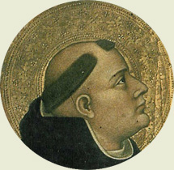
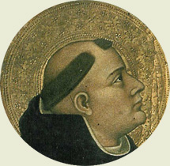

|  |
|---|
Textum Leonino 1968 edito adaequatum
ac translatum a Roberto Busa SJ in taenias magneticas
denuo recognovit Enrique Alarcón atque instruxit


|  |
|---|


[69073] Contra errores Graecorum, pars 1 pr. Libellum ab excellentia vestra mihi exhibitum, sanctissime pater Urbane Papa, diligenter perlegi, in quo inveni quamplurima ad nostrae fidei assertionem utilia et expressa. Consideravi autem, quod eius fructus posset apud plurimos impediri propter quaedam in auctoritatibus sanctorum patrum contenta, quae dubia esse videntur, et unde possent materiam ministrare et contentiosis dare occasionem calumniae et ideo, ut remota omni ambiguitate, ex auctoritatibus in praedicto libello contentis verae fidei fructus purissimus capiatur, proposui primo ea quae dubia in auctoritatibus praedictis esse videntur exponere, et postmodum ostendere quomodo ex eis veritas Catholicae fidei et doceatur et defendatur. Quod autem aliqua in dictis antiquorum sanctorum inveniuntur quae modernis dubia esse videntur, ex duobus aestimo provenire. Primo quidem, quia errores circa fidem exorti occasionem dederunt sanctis Ecclesiae doctoribus ut ea quae sunt fidei, maiori circumspectione traderent ad eliminandos errores exortos; sicut patet quod sancti doctores qui fuerunt ante errorem Arii, non ita expresse locuti sunt de unitate divinae essentiae sicut doctores sequentes; et simile de aliis contingit erroribus, quod non solum in diversis doctoribus, sed in uno egregio doctore Augustino expresse apparet. Nam in suis libris quos post exortam Pelagianorum haeresim edidit, cautius locutus est de potestate liberi arbitrii quam in libris quos edidit ante praedictae haeresis ortum: in quibus libertatem arbitrii contra Manichaeos defendens, aliqua protulit quae in sui defensionem erroris assumpserunt Pelagiani, divinae gratiae adversantes. Et ideo non est mirum, si moderni fidei doctores post varios errores exortos, cautius et quasi elimatius loquuntur circa doctrinam fidei, ad omnem haeresim evitandam. Unde, si qua in dictis antiquorum doctorum inveniuntur quae cum tanta cautela non dicantur quanta a modernis servatur, non sunt contemnenda aut abiicienda, sed nec etiam ea extendere oportet, sed exponere reverenter. Secundo, quia multa quae bene sonant in lingua Graeca, in Latina fortassis bene non sonant, propter quod eandem fidei veritatem aliis verbis Latini confitentur et Graeci. Dicitur enim apud Graecos recte et Catholice, quod pater et filius et spiritus sanctus sunt tres hypostases; apud Latinos autem non recte sonat, si quis dicat quod sunt tres substantiae, licet hypostasis idem sit apud Graecos quod substantia apud Latinos secundum proprietatem vocabuli. Nam apud Latinos substantia usitatius pro essentia accipi solet, quam tam nos quam Graeci unam in divinis confitemur. Propter quod, sicut Graeci dicunt tres hypostases, nos dicimus tres personas, ut etiam Augustinus docet in VII de Trinitate. Nec est dubium quin etiam simile sit in aliis multis. Unde ad officium boni translatoris pertinet ut ea quae sunt Catholicae fidei transferens, servet sententiam, mutet autem modum loquendi secundum proprietatem linguae in quam transfert. Apparet enim quod si ea quae litteraliter in Latino dicuntur, vulgariter exponantur, indecens erit expositio, si semper verbum ex verbo sumatur. Multo igitur magis quando ea quae in una lingua dicuntur, transferuntur in aliam, ita quod verbum sumatur ex verbo, non est mirum si aliqua dubietas relinquatur.
[69075] Contra errores Graecorum, pars 1 cap. 1 Potest autem apud aliquos esse dubium quod in plerisque locis harum auctoritatum dicitur, patrem esse causam filii, et patrem vel filium esse causam spiritus sancti. Et hoc quidem habetur primo in verbis Athanasii, quae in Nicaena synodo dixisse refertur, ubi dicit: quidquid habet filius a patre, habet sicut verbum a corde, splendor a sole et fluvius a fonte et a causa omne causatum. Qui autem iniuriatur vel negat causatum, equidem et causam eius negat. Dicat causatus genitus filius: qui me spernit, spernit eum qui me misit. Et alibi: non est imprincipiatus spiritus, hoc est sine principio et causa: sed potius ipsum demonstrat Deum verum, principiatum tamen non ex tempore, sed ex causa verae originis. Item Basilius spiritus sanctus ab ipso Deo missus, causam habet ipsum. Et item Theodoritus super epistolam ad Heb.: causa filii pater est. Apud Latinos autem non est consuetum quod pater dicatur causa filii vel spiritus sancti, sed solum principium vel auctor. Et hoc propter tria. Primo quidem, quia pater non posset intelligi causa filii per modum causae formalis vel materialis vel finalis, sed solum per modum causae originantis, quae est causa efficiens. Hanc autem semper invenimus secundum essentiam diversam ab eo cuius est causa. Et ideo, ne intelligeretur esse filius alterius essentiae a patre, non consuevimus dicere patrem esse causam filii, sed magis utimur illis nominibus quae significant originem cum quadam consubstantialitate, sicut fons, caput et alia huiusmodi. Secundo, quia causae apud nos correspondet effectus: unde patrem non dicimus esse causam, ne aliquis intelligat filium esse factum. Nam et apud philosophos prima causa Deus nominatur; omne autem causatum sub universitate creaturarum comprehenditur apud eos: et ideo si filius causam dicatur habere, posset intelligi quod sub universitate creaturarum comprehenderetur. Tertio, quia de divinis non de facili debet homo aliter loqui quam sacra Scriptura loquatur. Scriptura autem sacra patrem nominat principium filii, ut patet Ioan. I, 1: in principio erat verbum. Nusquam autem dicit patrem causam, vel filium causatum. Unde, cum causa plus dicat quam principium, non praesumimus patrem dicere causam, nec filium causatum. Nihil autem ad originem pertinens, adeo proprie dicitur in divinis, sicut hoc nomen principium. Quia enim ea quae sunt in Deo, incomprehensibilia sunt, et definiri a nobis non possunt, convenientius utimur in Deo nominibus communibus quam propriis: propter quod maxime proprium nomen eius dicitur esse qui est, quod est communissimum, ut patet Exod. III. Sicut autem causa est communius quam elementum, ita et principium quam causa: dicitur enim punctum principium lineae, sed non causa. Et ideo convenientissime nomine principii utimur in divinis. Nec tamen intelligendum est, quod sancti praedicti, qui nomine causae et causati utuntur in divinis personis, intendant diversitatem naturae inducere, aut filium esse creaturam. Sed per hoc volunt ostendere solam originem personarum, sicut nos nomine principii. Unde dicit Gregorius Nyssenus: causam autem et causatum dicentes, non naturam propter haec nomina significamus. Neque enim haec nomina loco essentiae vel naturae ratione damus; sed qualiter se habent differentiam, demonstramus; ut scilicet filium non ingenitum esse, neque patrem per generationem aliquam demonstramus ab aliquo. Item Basilius dicit: spiritum sanctum dico ingenitum, non habere patrem; nec creatorem; quia non est creatus; sed causam habet Deum, cuius est vere spiritus, a quo et procedit.
[69077] Contra errores Graecorum, pars 1 cap. 2 Item invenitur in auctoritatibus praedictorum doctorum, quod filius sit secundus a patre, et spiritus sanctus tertius ab eodem. Dicit enim Athanasius in sermone ad Serapionem: spiritus sanctus tertius est a patre; a filio tamen est secundus. Et Basilius dicit: dignitate quidem, et ordine secundus est a filio spiritus. Hoc autem alicui potest videri esse falsum. In divinis enim personis non est nisi ordo naturae, secundum quem, ut Augustinus dicit, non est alter prior altero, sed est alter ex altero. Nullus enim modus prioritatis est, secundum quem pater prior filio dici possit. Neque enim prior tempore, cum filius sit aeternus; neque prior natura, cum patris et filii sit una natura; neque dignitate, cum pater et filius sint aequales; neque etiam intellectu, cum non distinguantur nisi relationibus, relativa autem sunt simul secundum intellectum, cum unum sit de intellectu alterius. Et ita patet, quod proprie loquendo, filius non possit dici secundus a patre, nec spiritus sanctus tertius a patre. Dicunt ergo doctores praedicti, filium esse secundum et spiritum sanctum tertium, secundum ordinem in numerando, quod patet ex ipso Basilio, qui dicit: recepimus spiritum sanctum a patre et filio, tertium connumeratum, et glorificatum spiritum ipsius filii Dei, qui tradens ordinem salutiferi Baptismatis, dixit: euntes, baptizate omnes gentes in nomine patris et filii et spiritus sancti. Et Epiphanius dicit: spiritus Dei ex patre et ex filio tertius est appellatione. Quod autem dicit Basilius, quod spiritus est secundus a filio dignitate, videtur maiorem habere calumniam: quia videtur in dignitate Trinitatis constituere gradum, cum sit par dignitas et eadem trium personarum. Potest autem hoc exponi non de dignitate naturali, sed de personali; sicut et secundum nos dicitur, quod persona est hypostasis proprietate distincta ad dignitatem pertinente. Secundum quem modum dicit Hilarius, quod pater est maior filio propter auctoritatem originis; filius tamen non est minor patre propter substantiae unitatem.
[69079] Contra errores Graecorum, pars 1 cap. 3 Adhuc autem videtur esse magis calumniosum quod ex verbis sancti Epiphanii Cypriensis episcopi inducitur dicentis: spiritus sanctus spiritus est veritatis, lumen tertium a patre et filio. Ubi enim est unitas, non est ordo primi et tertii. Pater autem et filius et spiritus sanctus sunt unum lumen, sicut et unus Deus. Sicut ergo non potest Catholice dici, quod spiritus sanctus sit tertius Deus a patre et filio, ita non potest dici quod sit tertium lumen. Dicitur autem quod est tertia persona propter personarum pluralitatem. Ex hoc ergo quod dicit lumen tertium, sequitur quod sint tria lumina; quod ipse postmodum expresse subiungit, dicens: alia vero omnia positione vel compositione sive appellatione lumina dicuntur; non tamen istis tribus luminibus similia. Potest autem dici, quod lumen originem quandam importat: nam lumen est quod ex aliqua luce diffunditur, et etiam aliud lumen diffundere potest. Et secundum hoc, nomen luminis ad personales proprietates trahi potest ratione proprietatis diffusivae, licet secundum ipsam naturam lucis ad essentiam pertineat. Et hoc attendens dictus pater, tertium lumen et tria lumina dixit in divinis; licet hoc nullo modo sit ad consequentiam trahendum, sed simpliciter confitendum, quod pater et filius et spiritus sanctus sunt unum lumen.
[69081] Contra errores Graecorum, pars 1 cap. 4 Invenitur autem in dictis praedictorum patrum, quod essentia sit genita in filio, et spirata in spiritu sancto. Dicit enim Athanasius in tertio sermone gestorum Nicaenae synodi, ex persona filii loquens: tuum spiritum ex mea essentia a te genita ipsis hominibus compenso; et parum post: ex tua essentia, quam in me genuisti, spiritum sanctum da eis. Et idem in epistola ad Serapionem: essentiam suam in se ipse genitor retinens, totam in filio suo inenarrabiliter genuit. Et iterum: sicut pater habet vitam in semet ipso, idest naturam vivam spirantem, sic dedit et filio vitam habere in semetipso, id est eandem naturam genuit in filio spirantem spiritum vivum. Et infra dicit, patris et filii unam esse divinitatem naturaliter spirantem unum spiritum sanctum. Ex quibus verbis habetur, quod natura divina in filio sit genita, et in patre et filio sit spirans. Item Cyrillus in libro thesaurorum contra haereticos: virtus increata et genita in filio, filii est per omnem modum naturae paternae. Et iterum: pater filio dedit vitam, idest suam vitam naturalem genuit in filio. Item Basilius: ipse filius, quem dat nobis pater, est Deus de Deo essentialiter genitus, habens in se totam essentiam patris genitam. Item Athanasius dicit in epistola ad Serapionem, essentiam divinam in spiritu sancto esse spiratam, dicens, quod spiritus sanctus est vera et naturalis imago filii per essentiam omnimode ab eodem in se spiratam. Hic autem modus loquendi calumniosus est: et in sacro Lateranensi Concilio reprobatum est dogma Ioachim, qui hunc modum loquendi contra Magistrum Petrum Lombardum defendere praesumpsit. Ostendit enim praedictus Magister in quinta distinctione primi libri sententiarum, quas edidit, quod communis essentia nec generat, nec gignitur, nec procedit. Et hoc ideo, quia in divinis invenitur aliquid commune indistinctum, et aliquid quod distinguitur et non est commune. Illud ergo quod est distinctionis ratio in divinis, non potest attribui ei quod est commune et indistinctum, sed solum ei quod distinguitur. Nulla autem alia distinctionis ratio in divinis invenitur nisi ex eo quod unus generat et alius nascitur et alius procedit. Non ergo hoc ipsum quod est generare vel nasci vel procedere potest essentiae divinae attribui, quae est communis et omnino indistincta in tribus personis. Id autem quod est distinctum in divinis, est persona vel hypostasis vel suppositum divinae naturae, id est, quod est habens divinam naturam. Et ideo illa quae significant, vel supponere possunt personam, recipiunt congruenter praedicationem generationis aut processionis, sicut haec nomina pater et filius et spiritus sanctus significant personas determinatas, et hoc nomen persona vel hypostasis, in communi. Unde convenienter dicitur quod pater generat filium, et quod filius nascitur a patre, et quod spiritus sanctus procedit a patre et filio; et similiter quod persona generet vel spiret personam, aut generetur aut spiretur a persona. Hoc autem nomen Deus, quia significat essentiam communem per modum concreti (significat enim habentem divinitatem), potest supponere ex modo suae significationis pro persona; et ideo etiam huiusmodi locutiones convenienter conceduntur: Deus generat Deum, et Deus nascitur vel procedit a Deo. Hoc autem nomen essentia, et divinitas, et quaecumque in abstracto significantur, non habent ex modo suae significationis neque quod significent neque quod supponant pro persona. Et ideo non proprie ea quae sunt propria personarum, de huiusmodi nominibus praedicantur, ut dicatur essentia generans vel genita; licet quaedam horum nominum propinquiora sint personis, inquantum significant principia actuum qui proprie sunt personarum; sicut lumen, sapientia, bonitas, et huiusmodi. Unde et quae sunt propria personarum, de talibus minus inconvenienter praedicantur; ut cum dicitur filius lumen de lumine, sapientia de sapientia; sed essentia de essentia magis inconvenienter dicitur. Sed quia, licet modus significandi diversus sit cum dicitur Deus et divinitas, tamen res est penitus eadem: ideo propter rei identitatem, sicut unum de altero praedicatur, ut cum dicitur, Deus est divinitas, vel persona divina sive pater est divina essentia; ita et a sanctis interdum unum pro alio ponitur, ut sic dicatur quod essentia divina generat, quia pater, qui est essentia divina, generat; et essentia est de essentia, quia filius qui est essentia, est de patre, qui est eadem essentia divina. Et sic exponit Cyrillus in Lib. thesaurorum, dicens: pater de se vita vivente et essentia veraciter existente, tanquam a vera radice, generando filium, dat ei naturaliter suam naturalem vitam et essentiam. Sic etiam cum dicitur quod pater genuit naturam suam in filio, exponendum est, quod per generationem suam naturam filio dedit, sicut ex praemissis verbis Cyrilli habetur.
[69083] Contra errores Graecorum, pars 1 cap. 5 Ex hoc etiam patet qualiter exponendum sit quod idem Cyrillus in eodem libro dicere inducitur: quomodo ergo Iesus filius paternae essentiae, erit creatura? Non enim dicitur filius paternae essentiae, quasi a paterna essentia genitus, sed quasi paternam essentiam per generationem accipiens. Et per hunc modum exponenda sunt omnia quae similiter dici inveniuntur; sicut quod dicitur filius vel spiritus essentialiter procedere, inquantum procedendo essentiam a patre accipiunt.
[69085] Contra errores Graecorum, pars 1 cap. 6 Potest esse dubium quod Cyrillus in eodem Lib. thesaurorum dicit: omnia quae patris sunt propria naturaliter, sunt propria et filii. Aut enim hoc intelligitur de essentialibus attributis, et sic neque patri neque filio sunt propria, sed utrique communia; aut de personalibus, et sic quae sunt propria patris, non sunt propria filii, sicut innascibilitas et paternitas nullo modo sunt filii, sed solum patris. Patet autem ex praemissis ab eo, quod loquitur de essentialibus attributis. Praemittit enim quod quaecumque naturaliter dicuntur inesse patri, illa omnia insunt filio, sicut vita, veritas, lux et huiusmodi. Haec autem dicuntur esse propria patri non in respectu ad filium, nec filio in respectu ad patrem, sed utrique in respectu ad creaturam, cui in comparatione ad Deum non proprie praedicta conveniunt; vel proprium, hic dicitur non quod convenit uni soli, sed quod proprie et vere alicui convenit secundum se.
[69087] Contra errores Graecorum, pars 1 cap. 7 Item potest esse dubium quod Athanasius dicit in epistola ad Serapionem, quod pater per se et in se sine alicuius indigentia plenus et perfectus existens Deus, ad sui perfectionem neque filio neque spiritu sancto indiget. Quod enim pater non sit indigens, dubium non est: sic enim neque filius neque spiritus sanctus indigens est. Illud enim proprie est indigens cui in se considerato aliquid deest ad suam perfectionem: quod non potest dici neque de patre neque de filio, neque de spiritu sancto. Sed tamen non posset esse pater perfectus, nisi filium haberet, quia nec pater sine filio esset, nec esset Deus perfectus, nisi haberet verbum, et nisi haberet spiramen vitae, sicut idem Athanasius dicit in tertio sermone gestorum Nicaeni Concilii, sic inquiens de Arianis, qui negabant filium et spiritum sanctum esse coessentiales patri: dicunt sterilem esse et infructuosam naturam paternam, quae omnibus rebus insitam et propagativam similium dedit naturam. Et mutum faciunt patrem et sine verbo, qui omnibus rationalibus facultatem dedit loquendi. Mortuum etiam ipsum patrem dicunt, et expertem viventis naturae, inquantum scilicet negant spiritum sanctum coessentialem patri. In quo apparet quod non esset pater Deus perfectus, nisi filium et spiritum haberet. Idem etiam Athanasius dicit in epistola ad Serapionem, quod pater non potuit creare creaturam nisi per verbum, et deificandis creaturis se non potest communicare nisi per idem verbum: et similiter nec filius nisi in spiritu sancto. Commune ergo est patri et filio et spiritui sancto, quod nullus eorum sit indigens. Item commune est cuilibet eorum quod nullus sine aliis duobus potest esse Deus perfectus. Sed hac ratione proprie de patre dicit Athanasius, quod ad sui perfectionem filio et spiritu sancto non indiget, quia ipse suam perfectionem non habet ab alio; filius autem et spiritus sanctus suam perfectionem habent a patre. Unde idem Athanasius dicit in epistola ad Serapionem: non ratione filii, nec ratione spiritus sancti pater existit plenus beatus Deus. Neque enim a supra se habet a quo sit, neque ab infra se habet a quo habeat, idest quod sit a filio, vel a spiritu sancto.
[69089] Contra errores Graecorum, pars 1 cap. 8 Item videtur esse dubium quod Gregorius Nazianzenus in sermone de Epiphania dicit, quod spiritus sanctus secundum quod est inde procedit ut sit ingenitus et non filius, medius ingeniti genitique. Non enim videtur quod spiritus sanctus ingenitus dici possit. Hilarius enim dicit in Lib. de synodis, quod si quis duos ingenitos dicit, duos deos facit. Et Athanasius dicit in epistola ad Serapionem, quod non est ingenitus spiritus sanctus, quia imprincipiatum esse et ingenitum soli Deo patri Catholica Ecclesia congregata apud Nicaeam recte et fideliter attribuit, et de solo patre hoc esse credendum et praedicandum, sub anathemate toti mundo mandavit. Sed dicendum, quod ingenitus dupliciter accipi potest. Uno modo pro eo quod caret principio, et sic soli patri convenit, ut ex dictis Athanasii patet. Alio modo pro eo quod non est genitum, licet sit principium habens, et sic non solum Gregorius Nazianzenus in verbis praemissis, sed etiam Hieronymus in regulis definitionum contra haereticos spiritum sanctum dicit esse ingenitum.
[69091] Contra errores Graecorum, pars 1 cap. 9 Item in verbis praemissis Gregorii Nazianzeni dubium est quod dicit, spiritum sanctum esse medium ingeniti genitique, idest patris et filii, cum magis dicatur esse tertius, vel tertia in Trinitate persona, ut supra dictum est. Sed dicendum, quod non dicitur esse medius secundum ordinem enumerationis, qui respondet ordini originis, sic enim filius medius est inter patrem et spiritum sanctum; sed dicitur medius quasi communis nexus amborum: est enim communis amor patris et filii. Et similiter exponendum est quod Epiphanius dicit in libro de Trinitate, quod spiritus sanctus est in medio patris et filii.
[69093] Contra errores Graecorum, pars 1 cap. 10 Item in pluribus locis harum auctoritatum dicitur, quod spiritus sanctus sit imago filii, sicut Athanasius in sermone tertio Nicaeni Concilii: spiritus sanctus patris et filii una deifica et vivifica dicitur et est veritas, imago filii, ipsum per omnia in se essentialiter tenens, naturaliter repraesentat, quemadmodum et filius est imago patris; et in epistola ad Serapionem: spiritus sanctus ipsum filium in se continet naturaliter, tanquam eius vera et naturalis imago. Item Basilius: spiritus sanctus dicitur digitus, spiramen, unctio, sufflatio, sensus Christi, processio, productio, missio, emanatio, effusio, vaporatio, splendor, imago, character, Deus verus; et iterum: spiritus sanctus a patre et filio tertius vera et naturalis imago patris et filii existit, ipse utrumque nobis naturaliter repraesentans. Apud Latinos autem non consuevit dici quod spiritus sanctus sit imago patris vel filii. Dicit enim Augustinus in VI de Trinitate, quod verbum solus filius accipitur, et quod sic verbum dicitur quomodo imago, et quod solus filius est imago patris, quemadmodum et filius. Richardus etiam de sancto Victore in suo libro de Trinitate assignat rationem, quare spiritus sanctus non possit dici imago, sicut filius; quia scilicet, licet patri sit similis in natura, sicut et filius, non tamen convenit cum eo in aliqua proprietate relativa, sicut convenit filius cum patre in spiratione activa spiritus sancti. Quidam etiam huius rationem assignant, quod propter hoc spiritus sanctus non potest dici imago, quia esset imago duorum, scilicet patris et filii, cum sit a duobus: non potest autem duorum esse una imago. In auctoritate etiam sacrae Scripturae, quam praetergredi non licet de divinis loquentes, expresse habetur quod filius sit imago patris: dicitur enim Coloss. I, 13: transtulit nos in regnum filii dilectionis suae, in quo habemus remissionem peccatorum, qui est imago Dei invisibilis; et Hebr. I, 3, dicitur de filio: cum sit splendor gloriae et figura substantiae eius. Sed sciendum, quod a sanctis Graecis duae auctoritates sacrae Scripturae inducuntur, in quibus videtur dici quod spiritus sanctus sit imago filii. Dicitur enim Rom. VIII, 29: quos praescivit et praedestinavit conformes fieri imaginis filii sui. Imago autem filii nihil aliud videtur esse quam spiritus sanctus. Item I ad Cor. XV, 49, dicitur: sicut portavimus imaginem terreni, portemus et imaginem caelestis, idest Christi; per quam imaginem intelligunt spiritum sanctum, licet in his auctoritatibus non expresse spiritus sanctus imago dicatur. Potest enim intelligi, quod homines conformentur imagini filii, vel quod portent imaginem Christi inquantum ipsi homines sancti per dona gratiarum, ut sint similes Christo, perficiuntur, secundum illud apostoli II ad Cor. III, 18: nos omnes revelata facie gloriam domini speculantes, in eandem imaginem transformamur a claritate in claritatem tanquam a domini spiritu. Hic enim imaginem non dicit esse spiritum Christi, sed aliquid a spiritu Dei in nobis existens. Sed quia praesumptuosum est tantorum doctorum tam expressis auctoritatibus contraire, possumus quidem dicere spiritum sanctum esse imaginem patris et filii, ita quod per imaginem nihil aliud intelligatur quam existens ab alio et eius similitudinem gerens. Si autem per imaginem intelligatur aliquid existens ab altero, ex ipsa suae originis ratione habens quod similitudinem gerat eius a quo existit, inquantum est ab altero, ut filius genitus, vel ut verbum conceptum, sic solus filius dicitur imago: de ratione enim filii est quod similitudinem patris habeat in quacumque natura; et similiter de ratione verbi est quod sit similitudo eius quod verbo exprimitur, cuiuscumque sit verbum; sed non est de ratione spiritus vel amoris, quod sit similitudo eius cuius est, in omnibus. Sed hoc in spiritu Dei verificatur propter divinae essentiae unitatem et simplicitatem, ex qua oportet quod quidquid est in Deo, sit Deus. Nec obstat ad rationem imaginis quod spiritus sanctus non convenit cum patre in aliqua personali proprietate, quia similitudo et aequalitas divinarum personarum non attenditur secundum proprietates personales, sed secundum attributa essentialia. Neque enim inaequalitas et dissimilitudo secundum personalium proprietatum differentiam in divinis dici debet, sicut Augustinus dicit in libro contra Maximinum. Cum dicitur filius a patre genitus, non ostenditur inaequalitas substantiae, sed ordo naturae. Similiter etiam non obstat quod spiritus sanctus est a duobus. Est enim a duobus, inquantum sunt unum, cum pater et filius sint unum principium spiritus sancti.
[69095] Contra errores Graecorum, pars 1 cap. 11 Adhuc autem videtur esse magis dubium, quod Athanasius dicit in epistola ad Serapionem: filius est in suo patre tanquam in propria sua imagine. Non enim pater est imago filii, sed magis filius imago patris. Sed dicendum, quod imago hic improprie sumitur pro exemplari: sic enim quandoque abusive accipitur.
[69097] Contra errores Graecorum, pars 1 cap. 12 Item videtur esse falsum quod Basilius dicit in III sermone de spiritu sancto contra Eunomium haereticum: sicut, inquit, filius se habet ad patrem, eodem modo spiritus sanctus se habet ad filium. Et propter hoc Dei quidem verbum filius, verbum autem filii spiritus. Portansque omnia, inquit apostolus, verbo virtutis suae. Verbum enim, ut Augustinus dicit in Lib. de Trinitate, solus filius est. Unde et Ioannes nomen verbi pro nomine filii ponit, tam in principio Evangelii sui cum dicit: in principio erat verbum; quam etiam in sua canonica ubi dicit: tres sunt qui testimonium dant in caelo: pater, verbum et spiritus sanctus. Nec refert, si quis translationem mutet, ut loco verbi eloquium ponat: nam id quod quis loquitur, verbum eius est. Unde sicut solus filius in divinitate est verbum, ita solus est eloquium. Sed dicendum, quod verbum Dei quandoque dicitur etiam sermo divinitus inspiratus et prolatus: et de hoc verbo hic Basilius intelligit, dicens spiritum sanctum esse verbum vel eloquium filii effective, inquantum sancti ab eo inspirati de filio sunt locuti, secundum quod dicitur Ioan. XVI, 13, de spiritu sancto: quaecumque audiet, loquetur. Et quod hic sit intellectus Basilii, patet ex eo quod subdit: ex quo eloquium filii per Deum: gladium spiritus, dicit, sumite, quod est verbum Dei. Ipsum enim verbum fidei a sanctis prolatum, gladius spiritus manifeste dicitur.
[69099] Contra errores Graecorum, pars 1 cap. 13 Item dubium esse videtur quod Cyrillus in Lib. thesaurorum videtur dicere, quod aliquando nomine Christi spiritus sanctus intelligatur, sic inquiens: apostolus appellatione Christi spiritum Christum vocavit; ait enim: si in vobis Christus est, corpus quidem mortuum est et cetera. Et post pauca: spiritus sanctus in nomine Christi operando, et eundem Christum in se repraesentando, nomen Christi accipere, et Christus ab apostolo appellari dicitur. Hoc autem videtur esse contra personarum distinctionem, ut nomen unius personae alteri attribuatur. Sicut enim pater nunquam est filius, nec e converso, ita filius nunquam est spiritus sanctus, nec e converso. Non potest ergo nomen Christi de spiritu sancto praedicari, neque igitur pro spiritu sancto poni. Sed dicendum, quod dictus pater appellatione Christi dicit spiritum Christum vocari, vel nomen Christi accipere, et Christus appellari, non quasi Christus de spiritu sancto praedicetur, vel e converso (hoc enim esset Sabellianae impietatis), sed intelligitur in nomine Christi spiritus sanctus ratione concomitantiae, quia ubicumque est Christus, est spiritus Christi, sicut ubicumque est pater, est filius. Unde interponit: numquid in hoc veritatis praedicator, scilicet apostolus, veritatem inconfusibilium personarum confudit sabellizando? Non, sed potius hoc Ecclesiae indicare curavit ut spiritus sanctus non sit alienus a natura verbi.
[69101] Contra errores Graecorum, pars 1 cap. 14 Item dubium esse videtur quod Athanasius dicit in III sermone Nicaeni Concilii, loquens de Arianis. Non, inquit, ut asserunt alienati a gratia Evangelii, et privati Deo spiritu, spiritus gratificat et mittit filium, propter quod audierunt: et nunc dominus misit me, et spiritus eius: Isai. XLVIII, 16; et alibi: spiritus domini super me: Isai. LXI, I. Hoc enim videtur esse contrarium ei quod Augustinus dicit in Lib. de Trinitate, quod filius sit missus a spiritu sancto, probans hoc per auctoritates inductas. Nec solum a spiritu sancto, sed etiam a se ipso probat eum missum, quia est missus a tota Trinitate. Sed dicendum quod in missione divinae personae duo possunt considerari: primo auctoritas personae mittentis ad personam quae mittitur; secundo effectus in creatura, ratione cuius persona divina mitti dicitur. Cum enim personae divinae sint ubique per essentiam, praesentiam et potentiam, secundum hoc persona mitti dicitur, secundum quod novo modo per aliquem novum effectum incipit esse in creatura: sicut filius dicitur esse missus in mundum, inquantum novo modo incepit esse in mundo per visibilem carnem quam assumpsit, secundum illud apostoli Gal. IV, 4: misit Deus filium suum, factum ex muliere, factum sub lege. Dicitur etiam mitti spiritualiter et invisibiliter ad aliquem, inquantum per sapientiae donum in eo incipit inhabitare: de qua missione dicitur Sap. IX, 10: mitte illam, scilicet sapientiam, a sede magnitudinis tuae, ut mecum sit et mecum laboret. Similiter etiam spiritus sanctus ad aliquem mitti dicitur, inquantum ipsum inhabitare incipit per donum caritatis, secundum illud Rom. V, 5: caritas Dei diffusa est in cordibus nostris per spiritum sanctum, qui datus est nobis. Si ergo in missione divinae personae consideretur auctoritas mittentis ad personam missam, sic sola persona potest aliam mittere a qua est persona missa: et secundum hoc pater mittit filium, et filius spiritum sanctum, non autem spiritus sanctus filium; et sic Athanasius loquitur. Si autem in missione personae divinae consideretur effectus, ratione cuius persona mitti dicitur, cum effectus sit communis toti Trinitati (nam tota Trinitas operata est carnem Christi, et operatur sapientiam et caritatem in sanctis), tunc potest dici, quod persona mittitur a tota Trinitate; et sic intelligit Augustinus. Sed tamen sciendum quod licet persona divina interdum secundum Augustinum dicatur mitti a persona a qua non procedit, non tamen persona quae a nullo procedit, potest dici quod mittatur. Pater enim, quia a nullo est, a nullo mittitur, licet per aliquod novum gratiae donum hominem inhabitet, et ad hominem venire dicatur, secundum illud Ioan. XIV, v. 23: pater meus diliget eum, et ad eum veniemus, et mansionem apud eum faciemus. Sic ergo in persona quae mittitur, requiritur quod aeternaliter ab aliqua persona procedat, sed non est necessarium quod procedat aeternaliter ab illa persona a qua mittitur, sed sufficit quod ab illa persona sit effectus secundum quem mittitur. Et hoc dico secundum modum quo Augustinus loquitur de missione. Sed secundum Graecos, persona non mittitur nisi ab illa a qua procedit aeternaliter: unde filius non mittitur a spiritu sancto, nisi forte secundum quod est homo. Propter quod Basilius auctoritates praedictas exponit, ut per spiritum intelligatur pater, secundum quod spiritus essentialiter sumitur, ut habetur Ioan. IV, 24: Deus spiritus est; et sic etiam Hilarius exponit in Lib. de Trinitate.
[69103] Contra errores Graecorum, pars 1 cap. 15 Item dubium est quod Basilius dicit in libro contra Eunomium, quod spiritus sanctus vere per filium operatur: quod quidem videtur esse falsum. Nam persona dicitur operari per illam quae ab ipsa est, sicut pater per filium, et non e converso. Sed dicendum, quod spiritus sanctus dicitur operari per filium secundum naturam humanam, non autem secundum naturam divinam.
[69105] Contra errores Graecorum, pars 1 cap. 16 Item dubium esse videtur quod dicit Athanasius ad Serapionem: impossibile erat secundum praedeterminationem divinae rationis ut Ecclesia Deum invisibilem formam et incorpoream immediate nudam reciperet; sed consubstantiavit se Deus eidem Ecclesiae, formam eius in se assumens. Ex quo videtur quod ante Christi incarnationem Deus per gratiam in hominibus non habitaret. Quod etiam quidam haeretici dicere praesumpserunt occasione illius quod dicitur Ioan. VII, 11: nondum erat spiritus datus, quia nondum erat Iesus glorificatus. Utrumque autem eodem modo est intelligendum. Nam sicut dicitur quod spiritus sanctus non fuerit ante datus, quia non in tanta plenitudine datus fuerat, in quanta apostoli eum post Christi resurrectionem acceperunt, ita etiam Ecclesia in tanta plenitudine gratiae Deum accipere non potuit secundum ordinationem divinam, in quanta accepit per Christi incarnationem, quia gratia et veritas per Iesum Christum facta est, ut habetur Ioan. I, 17. Unde in sermone Nicaeni Concilii Athanasius dicit: equidem ipsos consummari et perfici impossibile est, nisi ego perfectum suscipiam hominem. Quod eodem modo intelligendum est sicut et quod supra dictum est. Ideo autem dicit secundum praedeterminationem divinam, quia possibile erat Deo alio modo quam per Christi incarnationem, perfectionem gratiae humano generi conferre, loquendo de potentia absoluta; sed non potuit humanum genus hanc plenitudinem aliter consequi, supposita Dei ordinatione.
[69107] Contra errores Graecorum, pars 1 cap. 17 Item videtur esse dubium quod Athanasius dicit in epistola ad Serapionem, essentiam divinam increatam, conceptam esse et natam ex divina virgine matre. Magister enim in III Sentent., dist. VIII, dicit, quod quae res non est de patre genita, non videtur de matre esse nata, ne res aliqua filiationis nomen habeat in humanitate quae non habet in divinitate. Et sic, cum divina essentia non sit nata de patre, non potest dici esse de matre. Sed dicendum, quod sicut improprie essentia divina dicitur generans vel genita secundum generationem aeternam, inquantum essentia ponitur pro persona, ut intelligatur essentia generare, quia pater, qui est essentia generat; secundum eundem modum dicitur essentia divina nata de virgine, quia filius Dei, qui est divina essentia, est de virgine natus.
[69109] Contra errores Graecorum, pars 1 cap. 18 Item potest esse dubium quod Athanasius dicit in eadem epistola: deitas homo facta, per suum spiritum sibi Ecclesiam conformavit. Dicit enim Magister in quinta distinctione tertii libri sententiarum, quod non debet dici quod divina natura sit caro facta, sicut dicitur: verbum caro factum est. Sic autem dicitur verbum caro factum est quia verbum homo factus est. Non ergo debet dici quod divina essentia, sive divinitas, facta sit homo. Sed dicendum, quod non dicitur divinitas esse facta homo quasi divina natura sit conversa in humanam, sed per illum modum quo dicitur quod natura divina assumpsit naturam humanam in una persona, scilicet verbi. Sicut etiam Damascenus dicit, quod natura divinitatis in una suarum personarum incarnata est, idest carni unita. Sciendum tamen, quod alia ratione dicitur quod verbum est homo, et quod divinitas est homo. Cum enim dicitur, verbum est homo, est praedicatio per informationem; quia scilicet persona verbi est subsistens in humana natura. Cum vero dicitur, divinitas est homo, non est praedicatio per informationem, quia humana natura non informat divinam, sed est praedicatio per identitatem; sicut etiam cum dicitur, essentia divina est pater, vel, essentia divina est filius: homo enim supponit pro persona filii, cum dicitur, divinitas est homo. Et eadem ratio veritatis est cum dicitur, divinitas facta est homo, quia incepit esse persona filii incarnata, quod importatur in nomine hominis, licet non inceperit esse filii persona: semper enim deitas fuit filius, sed non semper fuit homo.
[69111] Contra errores Graecorum, pars 1 cap. 19 Item dubium videtur quod Athanasius dicit in III sermone Nicaeni Concilii de filio Dei loquens: in sua usia, idest essentia, nostram naturam a nobis assumpsit. Cum enim assumptio ad unionem terminetur: sicuti unio non est facta in natura, sed in persona, ita non videtur quod humana natura sit assumpta in essentia filii. Dicendum est ergo, quod locutio est impropria, et est sic exponenda: assumpsit naturam nostram in sua usia, idest ut esset unita suae usiae in una persona.
[69113] Contra errores Graecorum, pars 1 cap. 20 Item videtur esse dubium quod Athanasius dicit in eodem sermone, hominem esse assumptum, sic inquiens, ex persona filii loquens: pro pleno homine assumpto, plenum et perfectum hominibus donem spiritum sanctum Deum; et in epistola ad Serapionem: communio Ecclesiae est a patre per filium in spiritu sancto per deificum et Deum factum hominem ab eodem filio assumptum. Sciendum est autem, quod cum nihil sumat seipsum, oportet semper esse diversum assumens et assumptum, sicut et recipiens et receptum. Si ergo homo dicitur assumptus a filio Dei, oportet quod id quod supponitur nomine hominis, diversum sit ab eo quod supponitur in nomine filii Dei. Nomine autem hominis potest supponi vel aliqua persona hominis completa, vel saltem aliquod suppositum hominis, non habens rationem personae. Si ergo dicatur quod homo sit assumptus, secundum quod homo supponit pro aliqua persona humana, sic sequetur quod persona divina assumpsit humanam personam, et sic erunt duae personae in Christo: quod est haeresis Nestorianae; et ideo Augustinus dicit in Lib. de fide ad Petrum, quod Deus verbum non accepit personam hominis, sed naturam. Quidam vero dixerunt, volentes hunc errorem vitare, quod cum dicitur homo assumptus a verbo, in nomine hominis intelligitur quoddam suppositum humanae naturae, quod est hic homo, non tamen est persona hominis, quia non est per se separatim existens, sed est unitum alicui digniori, scilicet filio Dei. Et quia hoc suppositum hominis, quod significatur assumptum, cum dicitur homo assumptus, est aliud a supposito filii Dei, dicunt in Christo duo supposita, sed non duas personas. Sed ad hanc positionem sequitur quod haec propositio non sit vera: filius Dei est homo. Impossibile est enim quod duorum quorum unum est aliud secundum suppositum ab altero, unum de altero vere praedicetur. Et ideo communiter tenetur, quod sit unum tantum suppositum, quod supponitur nomine hominis, et nomine filii Dei. Ex quo sequitur quod haec sit falsa vel impropria: homo est assumptus; sed est exponenda: filius Dei assumpsit hominem, idest humanam naturam.
[69115] Contra errores Graecorum, pars 1 cap. 21 Item dubium est de hoc quod Athanasius dicit in eadem epistola: filius Dei, ut hominem ad se reduceret, hominem in sua hypostasi assumens deificando Deum fecit; et in III sermone Nicaeni Concilii: ipsos consummari impossibile est, nisi ego perfectum suscipiam hominem, et deificem, et mecum Deum faciam. Ex quibus datur intelligi quod haec sit vera: homo factus est Deus. Sed sciendum, quod secundum illam opinionem quae in Christo dicit duo supposita, aequaliter utraque est vera: Deus factus est homo, et: homo factus est Deus. Est enim sensus secundum eos, cum dicitur, Deus factus est homo: suppositum divinae naturae unitum est supposito humanae naturae; et e converso cum dicitur, homo factus est Deus, sensus est: suppositum humanae naturae est unitum filio Dei. Sed tenendo quod in Christo sit unum tantum suppositum, haec est vera et propria: Deus factus est homo, quia ille qui fuit Deus ab aeterno, incepit esse homo ex tempore. Haec autem non est vera proprie loquendo: homo factus est Deus; quia suppositum aeternum quod supponitur nomine hominis, semper fuit Deus; unde exponenda est sic: homo factus est Deus, idest, factum est ut homo sit Deus.
[69117] Contra errores Graecorum, pars 1 cap. 22 Item dubium est quod dicit Athanasius in praedicta epistola, ex persona Christi loquens: post resurrectionem amota a me omni imagine primi parentis, et abolita per trophaeum crucis, ego iam immortalis vos patri meo in filios adopto. Sciendum est enim, quod imaginem primi parentis tripliciter aliquis potest habere. Primo quidem quantum ad similitudinem naturae, sicut dicitur Genes. V, 2: vixit Adam centum triginta annis, et genuit filium ad imaginem et similitudinem suam. Secundo, quantum ad culpam, de quo dicitur I Corinth. XV, 49: sicut portavimus imaginem terreni, ita portemus imaginem caelestis. Tertio, secundum poenalitatem, sicut habetur Zach. XIII, 5: homo agricola ego sum, quoniam Adam exemplum meum ab adolescentia mea. Primam ergo Adae imaginem Christus assumpsit cum nostra natura, et nunquam deposuit; secundam vero nunquam habuit; tertiam assumpsit quidem, sed in resurrectione deposuit: et de hac loquitur Athanasius.
[69119] Contra errores Graecorum, pars 1 cap. 23 Item dubium esse videtur de hoc quod Athanasius in sermone Nicaeni Concilii dicit: aut quomodo creatura creatori cooperatur, intiment nobis. Ex quo datur intelligi quod creatura creatori cooperari non possit: quod videtur esse falsum, cum sancti dicantur esse Dei adiutores et cooperatores, secundum apostolum. Sed sciendum, quod aliquid dicitur cooperari alicui dupliciter. Uno modo, quia operatur ad eundem effectum, sed per aliam virtutem; sicut minister cooperatur domino, dum eius praeceptis obedit, et instrumentum artifici, a quo movetur. Alio modo dicitur aliquid cooperari alicui, inquantum operatur eandem operationem cum ipso: sicut si diceretur de duobus portantibus aliquod pondus, vel de pluribus trahentibus navem, quod unus alteri cooperetur. Secundum ergo primum modum creatura potest dici creatori cooperari quantum ad aliquos effectus, qui fiunt mediante creatura: non tamen quantum ad illos effectus qui sunt immediate a Deo, ut creatio et sanctificatio. Secundo autem modo creatura creatori non cooperatur, sed solum tres personae sibi invicem cooperantur, quia earum est operatio una; non autem ita quod quaelibet earum partem virtutis possideat, per quam operatio completur, sicut accidit in multis trahentibus navem: sic enim cuiuslibet virtus esset imperfecta; sed ita quod tota virtus ad operationem sufficiens est in qualibet trium personarum.
[69121] Contra errores Graecorum, pars 1 cap. 24 Item dubium videtur esse quod Basilius contra Arrium dicit, quod creatura increato non est propria: quod est contra id quod dicitur Ioannis I, 11: in propria venit. Sed hoc solvit Gregorius in quadam homilia dicens, quod creatura est propria Dei secundum potestatem, aliena vero secundum naturam, idest alterius naturae a Deo existens.
[69123] Contra errores Graecorum, pars 1 cap. 25 Item dubium est quod Basilius dicit contra Eunomium: in Angelis ordinatum dicimus unum principem, alium autem subiectum in natura, tamen non dicimus secundum et tertium. Ex quo videtur quod omnes in natura sunt aequales a Deo creati, ut posuit Origenes. Apud nos autem dicitur, quod sicut differunt in donis gratiarum, ita et in naturalibus bonis. Sed dicendum, quod dicit Basilius, in Angelis non esse quantum ad naturam secundum et tertium, non est intelligendum quod unus non sit perfectioris naturae quam alius, sed quia omnes communicant in una generis natura, licet non in natura speciei.
[69125] Contra errores Graecorum, pars 1 cap. 26 Item dubium est quod dicit Cyrillus in libro thesaurorum, quod docente Paulo non solum humana ratio addiscit, verum etiam et Seraphim supernis mysteria cordis paterni occulta reserantur. Ex quo videtur quod ad Angelos etiam summos cognitio deveniat per homines. Et videtur hoc esse dictum propter id quod habetur Ephes. III, 8: mihi omnium sanctorum minimo data est gratia haec, in gentibus evangelizare investigabiles divitias gratiae Christi ut innotescat principibus et potestatibus in caelestibus per Ecclesiam multiformis sapientia Dei. Sed contrarium huius docet Dionysius in IV cap. angelicae hierarchiae, ostendens quod cognitio divinorum prius ad Angelos quam ad homines pervenit; et in VII eiusdem libri capitulo dicit, quod Seraphim immediate a Deo edocentur. Et Augustinus dicit super Genesim ad litteram, quod non latuit Angelos mysterium regni caelorum, quod opportuno tempore revelatum est pro nostra salute. Et ideo dicendum est quod cum Angelorum non sit futura praenoscere, sed Dei solius, licet Angeli ipsum mysterium nostrae redemptionis a saeculis cognoverint, ut Augustinus dicit, tamen aliquas huius redemptionis circumstantias nesciverunt plene quandiu erant futura, sed eis completis, eorum notitiam acceperunt, sicut et aliorum quae praesentialiter fiunt. Non ergo sic intelligendum est quod docente Paulo mysteria divina supernis Seraphim sint revelata, quasi ipsi a Paulo didicerint, sed quia Paulo praedicante, et aliis apostolis, perficiebantur ea quae praesentialiter Angeli cognoscebant, et futura ignoraverant. Et hoc sonant verba Hieronymi dicentis, angelicas dignitates praefatum mysterium ad purum non intellexisse, donec completa est passio Christi, et apostolorum praedicatio per gentes dilatata.
[69127] Contra errores Graecorum, pars 1 cap. 27 Item dubium est quod Cyrillus dicit, quod cum dicitur Genes. I, quod spiravit Deus in faciem hominis spiraculum vitae, ut fieret homo in animam viventem: ipsum spiramen non dicimus animam: si enim esset anima inconvertibilis esset et non peccaret, quia de essentia esset divina: sed sancti spiritus effusionem in ipso principio superpositam humanae animae dixit Moyses; quod est contra expositionem Augustini, qui animam humanam per illud spiramen ponit, et ostendit quod non propter hoc sequitur quod sit de substantia divina. Est enim tropica locutio, ut dicatur inspirasse non corporaliter, sed quia spiritum, idest animam, fecit ex nihilo. Et quod est amplius, videtur esse repugnans dictis apostoli, qui I ad Cor. XV, 45, dicit: factus est primus homo Adam in animam viventem; novissimus Adam in spiritum vivificantem; sed non prius quod spirituale est, sed quod animale. Ubi expresse illam vitam animae dicit esse aliam a vita quae est per spiritum sanctum: unde illa inspiratio per quam dicitur homo factus in animam viventem, non potest de gratia spiritus sancti intelligi. Unde dicendum est, quod expositio Cyrilli non potest esse litteralis, sed solum allegorica.
[69129] Contra errores Graecorum, pars 1 cap. 28 Item dubium esse potest de hoc quod Athanasius in epistola ad Serapionem dicit, quod Arianos qui non semel tantum, sed pluries blasphemarunt, impossibile est non blasphemare: quod videtur esse libertati arbitrii repugnans. Sed dicendum, quod impossibile hic pro difficili sumitur, quae difficultas ex consuetudine provenit; sicut et Ier. XIII, 23, dicitur: si mutare potest Aethiops pellem suam, et vos poteritis benefacere, cum didiceritis malum.
[69131] Contra errores Graecorum, pars 1 cap. 29 Item dubium est quod Chrysostomus dicit in sermone de fide, quod fides est non praedicabilis. Sed intelligendum est, idest per praedicationem non perfecte explicabilis.
[69133] Contra errores Graecorum, pars 1 cap. 30 Item dubium est de hoc quod Athanasius dicit quod fides nobis administrata est non ab Angelis, neque a signis et portentis; cum dicatur Hebr. II, 4, quod fides annuntiata est contestante Deo signis et portentis. Sed intelligendum est, quod fides nostra non habet auctoritatem neque ab Angelis, neque ab aliquibus miraculis factis, sed a revelatione patris per filium et spiritum sanctum; licet et Angeli ea quae sunt fidei nostrae revelaverint aliquibus, ut Zachariae, et Mariae, et Ioseph; et etiam ad fidei robur miracula plurima facta sint.
[69135] Contra errores Graecorum, pars 1 cap. 31 Item dubium est quod Athanasius dicit in epistola ad Serapionem: littera mortalis haec est: ab initio et ante saecula, etc.; et subiungit multa testimonia de veteri et novo testamento. Littera autem legis novae non videtur esse littera mortis, sic enim non differret a littera veteris legis, de qua dicitur II Cor. III, 6, quod littera occidit. Sed dicendum, quod neque littera novi testamenti neque veteris occidit nisi per occasionem. Sed occasionem mortis ex littera accipiunt aliqui dupliciter. Uno modo inquantum ex littera sacra accipiunt occasionem erroris; et hoc est commune tam litterae veteris testamenti, quam novi: unde et Petrus dicit, II canonicae, ult. 16, quod in epistolis Pauli sunt quaedam difficilia intellectu, quae indocti et instabiles depravant, sicut et ceteras Scripturas, ad suam damnationem. Alio modo inquantum ex praeceptis in littera sacrae Scripturae contentis sumitur occasio male vivendi, dum per prohibitionem concupiscentia augetur, et gratia adiuvans non confertur; et sic littera veteris testamenti dicitur mortalis, non autem littera novi.
[69137] Contra errores Graecorum, pars 1 cap. 32 Item dubium est de hoc quod dicit Athanasius in eadem epistola quod sola paterna definitio Nicaeni Concilii, emuncta a spiritu et non littera, est unica et vera possessio orthodoxorum. Posset enim aliquis intelligere, quod definitio dicti Concilii, auctoritate praeferatur litterae veteris, vel novi testamenti, quod est omnino falsum. Intelligendum est autem quod per dictum Concilium verus intellectus ex sacra Scriptura est acceptus quem soli Catholici habent, licet littera sacrae Scripturae sit communis Catholicis et haereticis et Iudaeis.
[69138] Contra errores Graecorum, pars 2 pr. His igitur expositis, ostendendum est quomodo ex auctoritatibus in praedicto libello contentis vera fides docetur, et contra errores defenditur. Considerandum siquidem est, quod in hoc apparuit filius Dei, ut dissolvat opera Diaboli, ut dicitur I Ioan. III, 8, unde et Diabolus versa vice ad hoc totum suum conatum apposuit et apponit, ut ea quae sunt Christi, dissolvat. Quod quidem primo per tyrannos facere tentavit, Christi martyres corporaliter occidentes; sed postmodum per haereticos, per quos spiritualiter plurimos interfecit. Unde si quis diligenter inspiciat haereticorum errores, ad hoc principaliter videntur tendere, ut Christi derogent dignitati. Derogavit namque dignitati Christi Arrius, dum filium Dei coessentialem patri esse negavit, eum asserens creaturam. Derogavit et Macedonius, qui dum spiritum sanctum creaturam esse dixit, filio subtraxit auctoritatem spirandi divinam personam. Derogavit et Manichaeus: qui dum visibilia a malo Deo creata asseruit, per filium omnia esse creata negavit. Dissolvit et quae sunt Christi, Nestorius, qui dum aliam personam esse filii hominis, et aliam filii Dei docuit, Christum esse aliquid unum negavit. Dissolvit et Eutyches, qui dum ex duabus naturis, divina scilicet et humana, in Christi incarnatione unam conficere voluit, utramque subtraxit: quod enim ex duobus conficitur, neutrum eorum veraciter dici potest. Dissolvit et Pelagius, qui dum gratia nos non indigere ad capessendam salutem confixit, adventum filii Dei in carnem frustravit: gratia enim et veritas per Iesum Christum facta est: Ioan. I, 17. Derogavit et Christo Iovinianus, qui dum virgines in coniugio viventibus aequavit, dignitati Christi detraxit, qua eum natum de virgine confitemur. Derogavit et Vigilantius, qui dum paupertatem pro Christo susceptam impugnavit, perfectioni, quam Christus servavit et docuit, contradixit; unde non immerito dicitur I Ioan. IV, 3: omnis spiritus qui solvit Iesum, ex Deo non est, et hic est Antichristus. Sic ergo et in hoc tempore aliqui esse dicuntur qui solvere Christum tentant, eius dignitatem quantum in ipsis est minuentes. Dum enim dicunt spiritum sanctum a filio non procedere, eius dignitatem minuunt, qua simul cum patre est spiritus sancti spirator. Dum vero unum caput Ecclesiae esse negant, sanctam scilicet Romanam Ecclesiam, manifeste unitatem corporis mystici dissolvunt: non enim potest esse unum corpus, si non fuerit unum caput, neque una congregatio, si non fuerit unus rector; unde Ioan. X, 16, dicitur: fiet unum ovile et unus pastor. Dum vero sacramentum altaris ex azymis posse confici negant, manifeste ipsi Christo repugnant, qui prima die azymorum, quando nihil fermentatum secundum legem debebat in Iudaeorum domibus inveniri, Evangelistae tradunt eum hoc sacramentum instituisse. Videntur etiam et puritati ipsius sacramentalis corporis Christi derogare, ad quam apostolus fideles exhortatur, dicens, I ad Corinth. V, 8, quod non est epulandum in fermento malitiae et nequitiae, sed in azymis sinceritatis et veritatis. Huius etiam sacramenti virtutem minuunt dum Purgatorium negant, quod in Ecclesia communiter pro vivis et mortuis consecratur; cum, Purgatorio sublato, in mortuis nullam efficaciam possit habere. Non enim prodest his qui sunt in Inferno, ubi nulla est redemptio; neque illis qui sunt in gloria, qui suffragiis nostris non egent. Quomodo igitur ex praemissis auctoritatibus errores huiusmodi confutentur, breviter ostendam, incipiens prius a processione spiritus sancti.
[69140] Contra errores Graecorum, pars 2 cap. 1 Ad ostendendum autem quod spiritus sanctus a patre procedat et filio, primo sumendum est quod etiam ab ipsis errantibus negari non potest, cum expresse auctoritate Scripturae probetur: quod scilicet spiritus sanctus sit spiritus filii. Dicitur enim ad Galat. IV, 6: quoniam estis filii Dei, misit Deus spiritum filii sui in corda vestra clamantem, abba, pater; et Rom. IIII, 9: si quis spiritum Christi non habet, hic non est eius; et actuum XVI, 1: cum venissent Misiam, tentabant ire in Bithyniam; et non permisit eos spiritus Iesu. Dicitur etiam I Corinth. II, 16: nos autem sensum Christi habemus; quod de spiritu sancto necesse est intelligi, ut patet per ea quae ab apostolo praemittuntur. Nominatur etiam spiritus sanctus, spiritus veritatis, Ioan. XV, 26, ubi dicitur: cum venerit Paraclitus, quem mittam vobis a patre, spiritum veritatis et spiritus vitae, Rom. VIII, 2: lex spiritus vitae in Christo Iesu; unde cum filius de se dicat, Ioan. XIV, 6: ego sum via, veritas et vita, concludunt doctores Graecorum, quod sit spiritus Christi; quod similiter adstruunt ex hoc quod habetur in Psal. XXXII, 6: verbo domini caeli firmati sunt, et spiritu oris eius omnis virtus eorum. Nam os patris filius dicitur, sicut et verbum. Sed ne aliquis posset dicere, quod alius sit spiritus qui a patre procedit, et alius qui est filii, ostenditur ex Scriptura, quod idem spiritus sanctus sit patris et filii. Nam Ioan. XV, 11, simul dicitur: spiritus veritatis et qui a patre procedit; et Rom. VIII, 9, postquam dixerat: si spiritus Dei habitat in vobis, statim subiungit: si quis spiritum Christi non habet, ut ostendat eundem esse spiritum patris et filii. Unde Basilius dicit contra Eunomium, postquam praedicta verba apostoli induxerat: ecce in patre et filio, et patris et filii, unum spiritum vidit, scilicet apostolus; et Theodoretus dicit super Epist. ad Rom., exponens idem verbum apostoli: communis est patris et filii spiritus sanctus. Quaerendum est ergo, quomodo spiritus sanctus sit spiritus filii, vel spiritus Christi. Potest autem aliquis dicere, quod est spiritus Christi quasi in homine Christo plenarie inhabitans, secundum illud Luc. IV, 1: Iesus plenus spiritu sancto regressus est a Iordane; de cuius plenitudine nos omnes accepimus, ut dicitur Ioan. I, 16. Haec autem responsio sustineri non potest, ut scilicet hac tantum ratione spiritus sanctus spiritus Christi dicatur. Invenitur enim a doctoribus Graecorum, quod spiritus sanctus sit naturalis spiritus filii. Dicit enim Athanasius in sermone III Nicaeni Concilii: sicut in Christo vivit nostra natura deifice, et ipse in ea regnat; ita et nos in suo naturali spiritu simus, vivamus et regnemus. Idem in epistola ad Serapionem: accepistis spiritum adoptionis, idest naturalem spiritum de natura naturalis filii. Et Cyrillus dicit super Ioan.: existit siquidem filius in proprio genitore, habens in se ipsum gignentem se. Et sic patris spiritus, veraciter et naturaliter filii videtur et est spiritus. Spiritus autem non est naturalis Christo secundum humanitatem, quia non pertinet ad naturam humanitatis, sed gratis a Deo in natura humanitatis effunditur. Non igitur potest propter hoc dici spiritus filii, quia Christum excellenter replevit secundum humanitatem. Item Athanasius dicit in sermone de incarnatione verbi, quod ipse Christus mittebat spiritum e sursum sicut Deus filius, et ipse deorsum accipiebat spiritum ut homo. Ex ipso igitur in ipsum habitat de divinitate eius, in humanitate eiusdem. Non solum ergo spiritus sanctus est spiritus Christi quia humanitatem eius replevit, sed magis quia est ex divinitate ipsius. Potest autem aliquis dicere, quod spiritus sanctus est filii secundum deitatem, sicut a filio Dei datus et missus, non autem sicut a filio personaliter et aeternaliter existens. Sed hoc etiam stare non potest. Dicit enim Cyrillus super Ioannem: proprius est spiritus sanctus Dei et patris; sed non est minus ipsius Dei filii, non tanquam alius et alius spiritus. Idem dicit in exhortatorio sermone ad Theodosium imperatorem: spiritus sanctus sicut est proprius patris, a quo procedit; sic et in veritate est et ipsius filii. Si ergo patris est, non solum quia ab ipso temporaliter datur et mittitur, sed etiam quia ab ipso aeternaliter existit; eadem etiam ratione et filii erit, quasi ab eo aeternaliter existens. Item Cyrillus dicit super Ioan. Veracissimus fructus essentiae ipsius filii existit ipse spiritus; est igitur filii, quasi a filio essentiam habens. Patet ergo quod ex hoc quod spiritum sanctum spiritum Christi confitentur, necesse est quod ulterius dicatur esse a filio ab aeterno.
[69142] Contra errores Graecorum, pars 2 cap. 2 Similiter autem patet ex auctoritate sacrae Scripturae quod filius mittit spiritum sanctum. Dicitur enim Ioan. XV, v. 26: cum venerit Paraclitus, quem ego mittam vobis a patre, etc., et XVI, 7: si enim non abiero, Paraclitus non veniet ad vos. Si autem abiero, mittam eum ad vos. Habetur etiam ex auctoritate Scripturae, quod pater dat spiritum sanctum: Ioan. XIV, 16: ego rogabo patrem, et alium Paraclitum dabit vobis. Sed quod et filius det eundem spiritum sanctum patet; dicitur enim Ioan. XX, v. 22, quod post resurrectionem dominus discipulis insufflavit, et dixit eis: accipite spiritum sanctum; quod etiam Athanasius confitetur in sermone Nicaeni Concilii, dicens ex persona filii loquens: quomodo erunt consummati ipsi, nisi ego verbum tuum consummem, idest perfectum assumam, et perficiam in me hominem, et eis mihi aequalem per omnia mihi cooperantem donem spiritum sanctum? Et idem in epistola ad Serapionem: hunc spiritum sanctum a filio te recepisse credo, o sancte consacerdos. Dicit autem idem Athanasius in eadem epistola: hic est ordo naturae divinae a patre in filio: ut qui a nullo est, a nullo mittatur; et qui est ab alio, in nomine suo non veniat, sed in nomine illius a quo existit. Ita et spiritus sanctus, qui a se non est, a se venire non debuit; sed in nomine illius a quo est, et a quo habet ut hypostasi sit Deus: quemadmodum de eo dicit filius: Paraclitus spiritus sanctus, quem mittet pater in nomine meo. Patet ergo quod ex hoc quod spiritus sanctus mittitur a filio, sequitur quod a filio existat aeternaliter, et ab eo habeat quod sit Deus. Item Niceta dicit super Ioan. V: non alia proprietate pater mittit spiritum, qua proprietate non mittat filius; vel aliqua alia proprietate filius mittit spiritum qua, non mittit et pater. Ex quo patet quod eadem proprietate et ratione pater et filius mittunt spiritum sanctum. Si ergo pater mittit spiritum quasi ab ipso aeternaliter existentem; et similiter filius spiritum sanctum mittet quasi de se aeternaliter existentem. Item Athanasius dicit in sermone Nicaeni Concilii, ex persona filii loquens: sicut me perfectum genuisti Deum, et perfectum me assumere fecisti hominem; sic ex te et ex mea essentia da eis perfectum spiritum sanctum. Idem dicit in epistola ad Serapionem: sicut in filio Dei nostra sibi unita manet natura, quam de nobis assumpsit; ita et ipse manet in nobis per suum spiritum coessentialem sibi, quem de sua essentia essentialiter spirat et donat nobis. Idem dicit in sermone de incarnatione verbi, quod datus est spiritus sanctus discipulis de plenitudine deitatis. Item Niceta super Ioan. dicit: filius spiritum sanctum ex se dat ut pater. Ex quibus omnibus accipitur quod non solum sic dicitur spiritus a filio dari vel mitti, inquantum donum gratiae, per quod spiritus sanctus nos inhabitat, est a filio; sed inquantum ipse spiritus sanctus est a filio. Impossibile est enim quod donum gratiae, cum sit quoddam creatum, sit ex essentia filii, sed spiritus sanctus coessentialis est filio: unde de essentia filii dari potest vel mitti. Item a nullo potest dari nisi quod eius est. Spiritus ergo sanctus ab eo datur cuius est, sicut habetur I Ioannis IV, 13: in hoc cognoscimus quoniam in eo manemus, et ipse in nobis, quia de spiritu suo dedit nobis. Si ergo filius mittit vel dat spiritum sanctum, oportet quod sit spiritus eius. Ex hoc autem quod est spiritus eius, sequitur quod ab eo sit aeternaliter, sicut ostensum est. Ex hoc ergo quod filius mittit vel dat spiritum sanctum, sequitur quod ab eo similiter aeternaliter existat.
[69144] Contra errores Graecorum, pars 2 cap. 3 Ulterius autem ex auctoritate sacrae Scripturae habetur quod spiritus sanctus accipiat de eo quod est filii. Dicitur enim Ioan. XVI, 14: ille me clarificabit, quia de meo accipiet, et annuntiabit vobis. Potest autem aliquis dicere, quod spiritus sanctus licet accipiat id quod est filii, non tamen accipit a filio: accipit enim essentiam patris a patre, quae quidem essentia est etiam filii, et pro tanto dicit filius, quod de meo accipiet; quod videtur innui ex consequentibus domini verbis; subdit enim, quasi se exponens: omnia quaecumque habet pater, mea sunt: propterea dixi vobis, quia de meo accipiet. Sed ex hac domini expositione de necessitate concluditur, quod spiritus sanctus a filio accipiat. Si enim omnia quae sunt patris, sunt etiam filii, oportet quod auctoritas patris, secundum quam est principium spiritus sancti, sit etiam filii. Sicut ergo spiritus sanctus accipit de eo quod est patris a patre, ita accipit de eo quod est filii, a filio; hinc est quod Athanasius dicit in epistola ad Serapionem: de sua propria essentia spiritum sanctum existentem Deum de se essentialiter suis apostolis et suae sponsae Ecclesiae demonstrando Christus affirmavit, sic dicens: de meo accipiet; idest ut de mea essentia habet ut sit Deus; sic a me habet et esse et loqui. Item Athanasius in sermone Nicaeni Concilii: spiritus sanctus quidquid habet, habet a verbo Dei; et in epistola ad Serapionem dicit: spiritus sanctus est coessentialis filio, a quo habet omnia quaecumque habet. Idem in eadem epistola: filius ait: ille, scilicet spiritus sanctus, me glorificabit; idest, in se meam, ut habet a me, deitatem, me gloriosum Deum demonstrabit; sicut et ego glorifico patrem meum, idest sicut in me ab ipso eius habeo deitatem. Et Basilius contra Eunomium dicit: denominatio a patre transit in filium, ut de Deo patre sit Deus filius, ex domino dominus, ex omnipotente omnipotens, ex sapiente sapientia, ex summe loquente verbum, ex virtute virtus: verus filius denominationes patris habet in se. Ita etiam et spiritus sanctus est dominus et Deus omnipotens, sapiens, virtus; naturaliter sumens habet a domino Deo patre et filio, a quo est et datur. Patet autem quod per hoc quod filius habet deitatem (et quidquid habet) a patre, aeternaliter est a patre. Spiritus ergo sanctus est aeternaliter a patre et filio sicut ab eis accipiens deitatem et quidquid habet.
[69146] Contra errores Graecorum, pars 2 cap. 4 Habetur etiam ex auctoritate sacrae Scripturae quod filius operetur in spiritu sancto, vel per spiritum sanctum. Dicit enim apostolus, Roman. XV, 19: non audeo aliquid loqui eorum quae non per me efficit Christus in obedientiam gentium, verbo et factis, in virtute signorum et prodigiorum, in virtute spiritus sancti; et I Corinth. II, 10: dicitur nobis revelavit Deus per spiritum suum. Est autem spiritus patris et filii. Pater ergo et filius per spiritum sanctum revelando operantur. Hinc est quod Athanasius dicit in epistola ad Serapionem: filius Dei illuminando nos praeveniens, et iustificando in fide corroborans, et Scripturas reserando donis suae sapientiae nos replens, non in alieno, et non suo spiritu dona concedit, remittens peccata, et charismatibus nos imbuens; sed potius in suo proprio spiritu sancto. Cyrillus etiam dicit in sermone dogmatum Dei, quod filius proprium habet in se essentialiter spiritum sanctum, et ex se naturaliter missum, in quo operatus est divina miracula, tanquam in propria et vera sua virtute. Ex hoc autem quod filius operatur per spiritum sanctum, de necessitate concluditur quod spiritus sanctus sit a filio. Potest enim dici aliquis per aliquid operari dupliciter. Uno modo ex eo quod illud per quod operatur, est sibi principium et causa operandi, sive efficiens et movens, sicut dicitur balivus operari per regem; sive causa formalis, sicut dicitur homo per artem operari. Alio modo ita quod id per quod operatur, sit causa operato, et non operanti, sicut cum dicitur rex operari per balivum, et artifex operari per instrumentum: et tunc oportet quod e converso operans sit principium operandi ei per quod operatur, sicut rex balivo, et artifex instrumento. Cum autem dicitur filius per spiritum sanctum operari, non potest intelligi quod spiritus sanctus sit principium operandi filio, quia filius a spiritu sancto non accipit. Relinquitur ergo quod filius sit principium operandi spiritui sancto: quod quidem esse non potest nisi per hoc quod dat ei virtutem operativam. Non autem dat ei tanquam prius non habenti: sic enim daret ei tanquam indigenti, et sequeretur quod spiritus sanctus esset filio minor. Relinquitur ergo quod ab aeterno ei dederit. Nec est aliud virtus operativa spiritus sancti quam eius essentia, cum spiritus sanctus sit simplex, sicut et pater. Relinquitur ergo quod ab aeterno filius essentiam divinam spiritui sancto dederit. Et hoc expresse ostendit Athanasius in epistola ad Serapionem: sicut pater per filium, et in filio a se deoriginato operatur naturaliter, et non e converso; ita et filius in spiritu sancto a se deoriginato naturaliter operatur tanquam in sua propria virtute, et non e converso.
[69148] Contra errores Graecorum, pars 2 cap. 5 Habetur etiam ex auctoritate sacrae Scripturae quod spiritus sanctus sit imago filii, secundum expositiones doctorum Graecorum, ut supra dictum est: quod, hoc quod dicitur Roman. VIII, 11: quos praescivit conformes fieri imaginis filii sui etc., et iterum quod I Corinth. XV, 49: sicut portavimus imaginem terreni, ita portemus imaginem caelestis, exponunt imaginem filii spiritum sanctum esse dicentes. Hinc est quod Athanasius dicit in epistola ad Serapionem, ex persona filii Dei loquens: accipite ipsam imaginem meam spiritum scilicet sanctum; et Gregorius Caesariensis dicit: spiritus sanctus est imago filii perfecti. Constat autem quod imago deducitur ab eo cuius est imago. Ex hoc ergo quod spiritus sanctus est imago filii, sequitur quod spiritus sanctus sit a filio. Posset autem aliquis dicere, quod est imago filii, inquantum assimilatur filio secundum aliquem effectum quem facit, sicut et filius: vel quia est a patre, sicut filius. Sed hoc excluditur per auctoritates sanctorum, quae spiritum sanctum naturalem imaginem filii esse dicunt. Non enim potest dici imago naturalis filii spiritus sanctus, nisi inquantum secundum naturam filio similatur, accipiens a filio naturam. Semper enim oportet quod forma imaginis proveniat a forma eius cuius est imago. Hinc est quod Athanasius in praedicta epistola dicit: quemadmodum consubstantiavit Deus Ecclesiae, formam eius in se assumens; ita ipsam eandem sua imagine naturali, scilicet spiritu sancto de sua essentia naturaliter existente, deifice et superabunde insignivit; et Cyrillus in libro thesaurorum: qui recipit filii imaginem naturalem, hoc est spiritum sanctum, habet veraciter per ipsum spiritum eundem filium, et filii patrem. Quomodo ergo connumerabitur creaturis spiritus sanctus, cum sit naturalis et incommutabilis imago filii Dei? Item Basilius dicit contra Eunomium: naturalis filii imago est spiramen eius spiritus.
[69150] Contra errores Graecorum, pars 2 cap. 6 Secundum vero rationem eandem dicunt praedicti doctores, quod spiritus sanctus sit character filii. Dicit enim Athanasius in praefata epistola quod filius spiritum sanctum tanquam characterem et suam imaginem ad reformandam Ecclesiam et sibi deifice conformandam transfundendo impressit; et Basilius dicit in libro contra Arium et Sabellium: sicut filius acquisivit nos patri, ex patre ipse idem: sic et spiritus acquirit nos filio per fidem, imprimens nobis characterem filii in Baptismate, a quo filio existit, et eius spiritus et character praedicatur verus.
[69152] Contra errores Graecorum, pars 2 cap. 7 Similiter etiam dicunt, quod spiritus sanctus sit sigillum filii. Dicit enim Athanasius in praedicta epistola: equidem spiritus sanctus est unctio et sigillum impressivum imaginis in se habitae: in quo spiritu vere tanquam in suo sigillo, idest imagine suae naturae, consignat et characterizat imprimendo ipsam suam imaginem Deus verbum Ecclesiae sponsae suae; et infra: Christus in suo proprio spiritu ungit et superungit, et eo tanquam suo sigillo continente ipsius essentiam se imprimit Ecclesiae suae sponsae. Et Chrysostomus dicit super epistolam ad Romanos: si spiritus est sigillum et caracter Christi; qui non habet sigillum et characterem Christi, hic non est ipsius Christi. Constat autem quod character et sigillum derivantur ab eo cuius sunt. Unde per auctoritates doctorum dictorum aperte ostenditur, quod spiritus sanctus a filio derivatur. Horum autem auctoritates etiam ex auctoritate sacrae Scripturae confirmantur. Dicitur II Corinth. I, 21: unxit nos Deus, et signavit nos, et dedit pignus spiritus in cordibus nostris; quod quidem de patre et filio intelligi oportet; cum uterque spiritum sanctum det, ut ostensum est; et ad Ephes. I, 13: in quo, scilicet Christo, credentes signati estis spiritu promissionis sancto, qui est pignus hereditatis nostrae.
[69154] Contra errores Graecorum, pars 2 cap. 8 Traditur etiam a praedictis Graecorum doctoribus, quod spiritus sanctus est a patre per filium. Dicit enim Cyrillus in libro thesaurorum: Deus pater per manum suam propriam, idest suam sapientiam et potentiam, cuncta produxit in esse in uno suo vero et vivifico atque deifico coessentiali sibi spiritu, quem de se essentialiter per eundem filium naturaliter coaeternum spiravit; et Basilius dicit: non est filius filii spiritus, quia est ex Deo, scilicet patre per filium. Et idem dicit contra Eunomium: si ex verbo tuo, o qui inimicaris veritati, ex proprio intellectu tuo spiritum producis, aereum per verbum verberans non eiusdem essentiae, spiritum sanctum ex intellectu patre per verbum unigenitum dubitas provenire? Et infra: ex patre se ipsum filius nominat verbum, et ex patre per se verbum spiritum nobis indubitanter affirmavit. Ex hoc autem ostenditur de necessitate quod spiritus sanctus sit a filio. Dictum est enim supra, quod cum dicitur aliquis per aliquid operari, oportet quod sit principium operandi ipsi operanti, vel saltem sit principium operationis ex parte eius ad quod terminatur operatio. Filius autem non potest esse principium spirandi patri. Unde si pater per filium spiritum sanctum spirat, de necessitate sequitur quod filius sit principium spiritus sancti. Idem autem habetur ex eo quod Gregorius Nyssenus dicit: spiritum sanctum ex patre esse mediante filio tenemus. Sic enim dicitur esse spiritus sanctus a patre, mediante filio, sicut et a patre per filium, inquantum pater est principium filii, et filius principium spiritus sancti.
[69156] Contra errores Graecorum, pars 2 cap. 9 Sed iam accedere oportet ad ponendum auctoritates doctorum Graecorum, ex quibus habetur expresse quod spiritus sanctus sit a filio. Dicit enim Athanasius in epistola ad Serapionem: Christus de suo spiritu dixit: non loquetur a semetipso, sed quaecumque audiet loquetur, idest, non est a semet ipso ut sit imprincipiatus spiritus, quod est solius patris; sed maxime et proprie est ab ipso filio, a quo et accipit ut sit Deus essentia, ab eo etiam audit quae et loquitur. Et Basilius dicit contra Arium et Sabellium: quomodo adoptat in filio spiritus sanctus, si alienus est a patre et filio? Quomodo inhabitat extraneus in illis quos Christus redimit, si non est a Christo?
[69158] Contra errores Graecorum, pars 2 cap. 10 Ne autem aliquis dicat aliter esse spiritum sanctum a patre, et aliter a filio, simul ab utroque a praedictis doctoribus esse asseritur. Dicit enim Epiphanius in libro de Trinitate: Deus ex Deo patre et filio est spiritus sanctus.
[69160] Contra errores Graecorum, pars 2 cap. 11 Si vero dicat aliquis, quod spiritus sanctus esse a patre et filio dicitur, tanquam ab eis temporaliter datus et missus, et non ab aeterno ab eis existens, per sequentia ostenditur esse falsum. Dicit enim idem Epiphanius in libro de vestibus pellicinis Adae et Evae: sicut dicit Christus: spiritus veritatis qui a patre procedit, ita et de meo accipiet. Ecce ex ambobus duorum semper spiritus existit. Idem dicit in sermone de incarnatione verbi: pater siquidem erat semper, et filius erat semper, et spiritus sanctus a patre et filio erat semper. Est ergo aeternaliter ab utroque.
[69162] Contra errores Graecorum, pars 2 cap. 12 Item ex auctoritatibus praedictorum doctorum habetur quod spiritus sanctus sit persona de personis patris et filii. Dicit enim Athanasius in sermone Nicaeni Concilii: damnat Ecclesia mater hic congregata adinventores huius haereseos, scilicet Arianorum, et spiritum sanctum increatum, Deum verum, hypostasim de patris et filii hypostasibus, eisdem coessentialem confitetur; et Epiphanius in libro anchorali: spiritus sanctus in se est hypostasis vera, non alia a patre et a filio essentia, nec aliena, sed eiusdem essentiae veraciter existens, hypostasis vero per se ex hypostasibus patris et filii. Non ergo solum est a patre et filio secundum donum gratiae, in quo datur vel mittitur, sed ratione suae personae. Est igitur a patre et filio ab aeterno.
[69164] Contra errores Graecorum, pars 2 cap. 13 Item ex auctoritatibus praedictorum habetur quod sit ex essentia patris et filii. Dicit enim Athanasius in sermone Nicaeni Concilii: in spiritu sancto omnium peccatorum et omnis blasphemiae fit remissio, qui, ut dictum est, de essentia existens patris et filii, eorum habet virtutem, cuncta per omnia cum eisdem creans et disponens. Item in epistola ad Serapionem ostendit: Christus de sua et patris communi essentia sempiternaliter existentem spiritum sanctum spiratum; et infra: Christus in suo proprio spiritu sancto, de sua, ut supra dictum est, usia existente, omnia nobis condonat. Et in eadem epistola: ab una et eadem divinitate patris et filii de filio existens spiritus sanctus, unus est.
[69166] Contra errores Graecorum, pars 2 cap. 14 Item habetur quod sit naturaliter a filio. Dicit enim Cyrillus: quis est vita? Ille equidem qui dixit Christus, ego sum via, veritas, et vita, tanquam in ipso veraciter, et ex ipso naturaliter spiritus eius existens spiritualem legem ponit. Ex quibus omnibus habetur quod spiritus sanctus non tantum est a filio sicut temporaliter datus vel missus, sed sicut ab aeterno ab eo procedens, utpote essentiam et naturam ab ipso accipiens. Hoc etiam haberi potest ex ipso modo loquendi: quia praedicti doctores non solum dicunt quod spiritus sanctus est a filio, quod posset referri ad temporalem missionem, sed etiam quod a filio existit, quod non potest referri nisi ad processionem aeternam: existit enim unumquodque secundum quod in se est. Dicit enim Cyrillus Ierosolymitanus patriarcha: spiritus sanctus a patre procedit, et ex deitate patris et filii existit. Basilius etiam dicit contra Eunomium: spiritus sanctus a filio habet existere, et ab ipso accipere, et annuntiare nobis.
[69168] Contra errores Graecorum, pars 2 cap. 15 Ulterius autem habetur ex auctoritatibus praedictorum expresse quod filius spirat spiritum sanctum. Dicit enim Athanasius in epistola ad Serapionem: filius de patre genitus, de sua immensa essentia non extra se, sed intra se, immensum Deum spirat spiritum sanctum. Item Cyrillus dicit in exhortatorio sermone ad Theodosium imperatorem: salvator de se ipso producit spiritum, et spirat, sicut et ipse pater.
[69170] Contra errores Graecorum, pars 2 cap. 16 Ne autem aliquis dicat, quod filius non proprie spirat spiritum sanctum, nominatur a praedictis doctoribus filius spiritus sancti spirator, tanquam hoc ex sua proprietate habens quod spiritum sanctum spiret. Dicit enim Athanasius in epistola ad Serapionem: haeretici ipsum filium verum spiratorem veri spiritus Paracliti blasphemant et negant; et in eadem epistola: qui blasphemat in spiritum spiratum, blasphemat equidem in spiratorem eius, idest in ipsum filium, et per filium blasphemat in genitorem eius. Item Basilius dicit contra Eunomium: filium spiritus sancti spiratorem et datorem sine aliquo dubio credimus.
[69172] Contra errores Graecorum, pars 2 cap. 17 Ut autem ostendatur quod simul et eadem ratione spiritus sanctus a patre spiratur, et filio, dicit Athanasius in praedicta epistola ad Serapionem, quod filius est conspirans patri, sic inquiens: Deus pater per Deum verbum non tanquam per organum, quod absit, sed per coessentialem suae essentiae vere viventi conspirantem vivum et deificum spiramen spirat Deum plenum et beatum spiritum sanctum.
[69174] Contra errores Graecorum, pars 2 cap. 18 Ne quis autem dicat quod spiratio ad processionem pertinet temporalem, exprimunt praedicti doctores, quod spiritus sanctus sit aeternaliter a filio spiratus. Dicit enim Athanasius in sermone Nicaeni Concilii, ex persona filii loquens: ut credat mundus a me essentialiter spiritum Paraclitum, et aeternaliter spiratum. Item Cyrillus in libro thesaurorum: spiritum sanctum a Christo et aeternaliter et essentialiter credimus et confitemur spiratum existere Deum.
[69176] Contra errores Graecorum, pars 2 cap. 19 Ad hoc etiam facit quod in eisdem auctoritatibus continetur, quod de essentia filii spiratur spiritus sanctus. Dicit enim Athanasius in sermone Nicaeni Concilii: de essentia ipsius verbi adoramus spiramen spiritum coaeternaliter spiratum Deum; et in eodem: Deus filius ex sua essentia spiravit spiritum sanctum; et in epistola ad Serapionem: haeretici a filio sunt exheredati, quia ab eius essentia essentialiter Deum spiratum non recipiunt spiritum sanctum; et in eadem quasi exponens quod dicit ex sua essentia, idest ex se essentia, sic dicit: filius natus a patre in se patris naturam tenens, equidem nomen non paternitatis, sed communicabilitatis cum ordine naturae servavit, ut ex se sua essentia non filium gignitive, sed spiritum sibi per omnia aequalem Deum et coaeternum spiraret; et hoc quidem multoties in eius verbis habetur. Ex quo patet quod cum dicitur spiritus sanctus spiratus esse a filio, non potest referri ad processionem temporalem tantum, sed ad aeternam, secundum quam spiritus sanctus a filio essentiam divinam accepit.
[69178] Contra errores Graecorum, pars 2 cap. 20 Habetur etiam ex auctoritatibus eorundem doctorum processio spiritus sancti a filio sub verbo emanationis. Dicit enim Athanasius in praedicta epistola ad Serapionem: a verbo vivente spiritus vivus emanans, et a forti virtus indeficiens desuper effunditur Ecclesiae; et Theodoretus super epistolam ad Ephesios: spiritus sanctus de sursum emanat a Christo, et sine invidia datur omnibus recipientibus.
[69180] Contra errores Graecorum, pars 2 cap. 21 Utuntur autem et praedicti doctores ad processionem spiritus sancti a filio ostendendam, verbo profluxus. Dicit enim Athanasius in sermone Nicaeni Concilii, ex persona Christi loquens: mitto apostolos in mundum non in virtute hominis, sed in virtute spiritus sancti ex mea usia profluentis; et in eodem sermone: si non ita credendum est de spiritu sancto, et praedicandum, quod sit veritas patris et filii coessentialis utrique, de eorum essentia profluens; quomodo in divino symbolo salutiferi Baptismatis salvator Deus filius sibi et patri cooperantem salutem nostram connumeraret? Et in epistola ad Serapionem dicit: spiritus sanctus coessentialem patri filium, cuius ipse erat spiritus, et eidem coessentialis, ipse tanquam de essentia eius profluens Deus, per patres Nicaenos credi et praedicari fecit. Et Cyrillus dicit in libro thesaurorum: quando spiritus sanctus in nobis effunditur, configuratos demonstrat nos Deo: profluit enim a patre et filio. Ex quo etiam habetur quod spiritus sanctus ab aeterno est a filio tanquam ab ipso essentiam habens.
[69182] Contra errores Graecorum, pars 2 cap. 22 Ex auctoritatibus etiam eorundem habetur quod filius deoriginat spiritum sanctum. Dicit enim Athanasius in sermone Nicaeni Concilii, quod ipse filius ex se naturaliter et coaeternaliter ut est Deus, deoriginat spirando spiritum; et in epistola ad Serapionem dicit, quod filius in spiritu a se deoriginato naturaliter operatur tanquam in sua propria virtute. Quod non videtur convenienter ad temporalem processionem trahi posse: nam ab illo deoriginatur aliquis a quo habet suum esse. Deoriginare enim est originem alicui dare.
[69184] Contra errores Graecorum, pars 2 cap. 23 Habetur etiam a praedictis doctoribus quod filius sit auctor spiritus sancti. Dicit enim Athanasius in epistola ad Serapionem: apostolus quae in eo operatur spiritus et efficit, filio auctori eius attribuit; sicut et filius quae ipse facit opera suo auctori Deo patri attribuit. Auctoritas autem in divinis personis unius ad alteram non est nisi secundum quod aeternaliter una est ab alia. Est ergo spiritus sanctus aeternaliter a filio.
[69186] Contra errores Graecorum, pars 2 cap. 24 Habetur etiam ex praedictis auctoritatibus quod filius sit principium spiritus sancti. Dicit enim Gregorius Nazianzenus in sermone Constantinopolitani Concilii: nostrum est credere sanctam Trinitatem, patrem scilicet sine principio, filium vero principium a patre principio, spiritum autem sanctum cum principio filio unum Deum esse per omnia et super omnia. Pater autem per hoc est principium filii quod filius est ab eo aeternaliter. Spiritus ergo sanctus aeternaliter est a filio.
[69188] Contra errores Graecorum, pars 2 cap. 25 Habetur etiam ex auctoritatibus eorundem quod filius sit fons spiritus sancti. Dicit enim Athanasius in sermone Nicaeni Concilii: sicut spiritus est in filio, sicut fluvius in fonte: et filius est in patre sicut splendor in sole gloriae per naturam: sic per gratiam spiritus sancti electi sunt in patre et filio. Et in epistola ad Serapionem dicit: est equidem filius apud patrem fons et lux; cuius fontis et lucis spiritus sanctus est verus fluvius, et splendor aeternae gloriae. Et in eadem epistola dicit: non enim spiritus sanctus operatur in Deo Christo verbo, suo scilicet naturali fonte; et infra: genitus filius et fons spiritus sancti utrumque in se continet, patrem scilicet, et spiritum, quorum ipse medium ordinem tenet: et idem Athanasius in sermone de incarnatione verbi dicit: David psallit dicens: quoniam apud te est fons vitae: quoniam siquidem apud patrem filius est fons spiritus sancti. Ex quo etiam habetur quod filius sit principium spiritus sancti sicut a se aeternaliter existentis.
[69190] Contra errores Graecorum, pars 2 cap. 26 Volunt autem quidam adversarii veritatis post tot testimonia, verae fidei confessioni resistere, dicentes, quod spiritus sanctus quamvis probetur esse, existere, spirari, emanare et profluere a filio, non tamen est concedendum quod a filio procedat. Hoc enim in nulla praemissarum auctoritatum continetur, neque etiam in auctoritate sacrae Scripturae, quae spiritum sanctum a patre dicit procedere, patri in hoc filium non adiungens, cum dicitur Ioan. XV, 26: cum venerit Paraclitus, quem ego mittam vobis a patre, spiritum veritatis, qui a patre procedit. Ostendendum est ergo quod ex praemissis de necessitate sequitur quod spiritus sanctus procedat a filio. Verbum enim processionis inter omnia quae ad originem pertinent, magis invenitur esse commune, et minus modum originis determinare. Quidquid enim quocumque modo est ab aliquo, secundum consuetum modum loquendi ab ipso procedere dicimus: sive sit ab eo naturaliter, sicut Petrus dicitur a suo patre processisse sive emissive, sicut spiramen procedit a spirante, sive effluxive, sicut fluvius procedit a fonte; sive artificialiter, sicut domus procedit ab artifice; sive localiter tantum, sicut sponsus dicitur de thalamo procedens. Non autem quidquid est ab alio quocumque modo, potest dici vel spirari, vel generari, vel fluere, vel emitti. Et propter hoc verbum processionis origini divinarum personarum maxime est accommodum: quia, sicut supra dictum est, divina per communia melius quam per specialia designantur. Ex quolibet igitur eorum quae ostensa sunt, scilicet quod spiritus sanctus existit a filio, vel fluit, vel spiratur, vel emanat, de necessitate concluditur, quod spiritus sanctus a filio procedat.
[69192] Contra errores Graecorum, pars 2 cap. 27 Item Cyrillus in expositione Nicaeni symboli dicit: coessentialis est spiritus patri et filio, et profluit, hoc est procedit tanquam a fonte, ex Deo et patre. Ex quo habetur quod idem est in divinis personis profluere et procedere. Spiritus autem sanctus profluit a filio, ut supra ostensum est. Ergo a filio procedit. Hoc autem magis confirmatur ex hoc quod in epistola Nestorio directa dicit, quod Christus est veritas, et spiritus sanctus profluit ab eo sicut ex Deo et patre. Si ergo idem est ipsum profluere a patre quod procedere, etiam per hoc quod a filio profluit, ostenditur ab eodem procedere. Item Gregorius Nazianzenus in sermone de Epiphania: spiritus sanctus unde est, inde procedit. Est autem a filio, sicut probatum est. A filio igitur procedit. Item Cyrillus dicit super Ioelem: spiritus sanctus est proprius ipsius Christi, et in ipso et ex ipso, quemadmodum et ab ipso intelligitur Deo et patre. Et maximus monachus in sermone de candelabro et septem lucernis: spiritus sanctus quemadmodum per naturam existit a Deo patre secundum essentiam, sic et a filio secundum naturam et essentiam existit veraciter, tanquam ex patre per filium procedat Deus: intelligitur autem et est ex patre sicut ab ipso procedens. Ergo est a filio sicut ab ipso procedens. Item Athanasius dicit in epistola ad Serapionem: quemadmodum filius se habet ad patrem ordine naturae, ita et spiritus sanctus se habet ad filium. Et in eadem epistola dicit, ex persona filii loquens: eundem ordinem et eandem naturam habet spiritus ad me filium, ut sit Deus de Deo, quem ordinem et quam naturam habeo ego ad patrem, ut sim Deus de Deo. Item Basilius contra Eunomium: sicut filius se habet ad patrem, eodem modo spiritus sanctus se habet ad filium. Filius autem hoc modo se habet ad patrem sicut ab eo procedens; dicit enim filius, Ioan. VIII, 42: ego ex Deo processi et veni. Ergo et spiritus sanctus procedit ex filio. Sed et ipso verbo processionis utitur Epiphanius in Lib. de Trinitate, dicens: secundum quem modum nemo novit patrem nisi filius, neque filium novit quis nisi pater; sic audeo dicere, neque spiritum novit quis, nisi pater et filius, a quo accipit, et a quo procedit. Et Athanasius in symbolo dicit: spiritus sanctus a patre et filio, non factus nec creatus nec genitus, sed procedens.
[69194] Contra errores Graecorum, pars 2 cap. 28 Considerandum est etiam, quod eisdem rationibus utuntur doctores Graecorum ad ostendendum processionem spiritus sancti a filio quibus et utuntur Latini doctores. Argumentatur enim Anselmus in Lib. de processione spiritus ad ostendendam processionem spiritus sancti ex hoc quod pater et filius sunt unius essentiae. Ex quo sequitur quod pater et filius non differant ab invicem nisi in hoc quod hic est pater, et ille filius. Habere autem spiritum sanctum ex se procedentem non pertinet ad rationem paternitatis, neque ad rationem filiationis. Non enim ex hoc pater dicitur pater, quod spiritus sanctus ab eo procedit; neque filiationi repugnat quod habeat ex se spiritum procedentem. Relinquitur ergo quod habere ex se spiritum procedentem, est commune patri et filio. Et similiter Niceta super Ioannem sic argumentatur: ex quo filius omnia quae patris sunt, essentialiter habet, habet et spiritum; et Cyrillus dicit in Lib. thesaurorum: vere spiritum Christi et spiritum patris apostolus dixit esse unum, et non plures: quoniam omnia quae sunt patris, veraciter et proprie transeunt secundum naturam in vero filio. Ex hoc autem patet quod cum dicitur in Evangelio, spiritus sanctus a patre procedere, datur intelligi quod procedat a filio, licet in Evangelio non addatur. Ea enim quae essentialiter dicuntur de patre et filio, dicta de patre, oportet quod intelligantur de filio, etiam si cum exclusione dicatur; sicuti cum dicitur Ioan. XVII, 3: ut cognoscant te solum Deum verum; et I Tim. VI, 15: quem, scilicet Christum, suis temporibus ostendet beatus et solus potens rex regum et dominus dominantium, qui solus habet immortalitatem. Intelliguntur enim huiusmodi et de filio verificari ea ratione, quia filius et pater secundum essentiam unum sunt, secundum quod dicitur Ioan. X, 30: ego et pater unum sumus. Cum ergo habere spiritum ex se procedentem, sit commune patri et filio, sicut ea quae essentialiter dicuntur, ut ex dictis patet; cum dicitur in Evangelio, spiritus sanctus a patre procedere, intelligendum est quod procedat a filio. Eadem ratione cum in symbolo a patribus edito dictum est quod spiritus sanctus procedat a patre, intelligi oportet quod procedat et a filio; sicut cum in eodem symbolo dicitur de patre quod sit omnipotens, et visibilium et invisibilium factor, oportet quod et de filio intelligatur.
[69196] Contra errores Graecorum, pars 2 cap. 29 Ostenditur etiam ex dictis dictorum patrum, quod spiritus sanctus a filio distinguitur per hoc quod ab eo est. Dicit enim Gregorius Nyssenus: dogma faciens de deitate, incommutabilem esse naturam divinam confitemur, et differentiam quae est secundum causam et causatum, non negamus; idest, secundum principium et quod est de principio, ut supra expositum est. Et postea subdit: item aliam differentiam intelligimus: unum nempe propinquum ex primo, scilicet filium ex patre; alium autem ex propinquo et ex primo, spiritum scilicet ex filio et ex patre. Patet ergo quod per primam differentiam spiritus sanctus et filius a patre distinguuntur; per secundam autem distinguitur spiritus sanctus a filio; quia scilicet filius a patre procedit, non per spiritum, sed spiritus sanctus per filium. Sicut et Richardus de s. Victore in V de Trinitate, ostendit duarum processionum differentiam per hoc quod filius procedit ab uno tantum, spiritus vero sanctus a duobus. Relinquitur ergo secundum utriusque sententiam quod filius et spiritus sanctus ab invicem non distinguerentur, si unus ab alio non esset.
[69198] Contra errores Graecorum, pars 2 cap. 30 Item distinctio personarum oportet quod sit secundum aliquem ordinem, qui est ordo naturae, ut Augustinus dicit. Unde et ordinem personarum distinctarum Athanasius in epistola ad Serapionem catenae assimilat, dicens: equidem qui caput catenae trahit, medium et aliam extremitatem trahit; sic et qui in spiritum blasphemat, tertiam personam; et in filium medium, et in patrem extremum, idest principium caput catenae trini discreti inconfusi ordinis divini blasphemat; sicut et e converso qui spiritum credit et recipit Deum, recipit et filium cuius et a quo est: sicut qui tenet unum caput catenae ad se trahens, medium eius tenet, et per medium aliud caput apprehendit. Et propter hoc etiam in eadem epistola idem dicit, quod spiritus Paraclitus terminus trini beati et superessentialis divini ordinis, infallibiliter terminat proprium finem in se sua hypostasi, sicut et pater tenet ipsius ordinis caput et fontale principium imprincipiatus ipse. Medium autem extremitatum ordinis veraciter tenet filius inter patrem scilicet et spiritum. Et paulo post: pater a se principio trini ordinis divini per medium filium genitum terminat ipsius ordinis finem naturali proprietate in tertio spirato spiritu. Cyrillus etiam dicit in Lib. thesaurorum: spiritum sanctum ex filio secundum naturam existentem, et ab ipso ad creaturam missum, renovationem Ecclesiae operantem, et terminum sanctae Trinitatis existentem; et concludit: si hoc ita est, Deus ergo ex Deo filio spiritus sanctus est. Si enim spiritus sanctus non esset a filio, non magis spiritus sanctus esset terminus Trinitatis quam filius; nec ordo Trinitatis assimilaretur catenae, sed magis triangulo. Hanc etiam rationem tangit Richardus de s. Victore in V de Trinitate: ubi ostendit, quod in divinis personis non potest esse nisi una sola a qua non procedat divina persona; nec etiam possunt esse duae personae quae sint ab una sola persona. Utrumque enim praedicto ordini, qui in divinis personis attenditur, repugnaret: quorum tamen utrumque oportet poni, si spiritus sanctus a filio non procederet. Hunc etiam personarum divinarum ordinem Cyrillus in Lib. thesaurorum ostendit sub alia similitudine ex auctoritate Scripturae assumpta, quae spiritum sanctum digitum Dei nominat in Evangelio, cum dicit: si in digito Dei eiicio Daemonia; loco cuius in alio Evangelio dicitur: si in spiritu Dei et cetera. Filius autem dicitur brachium patris, Isai. LI, 9: induere fortitudine brachium domini. Dicit ergo: sicut brachium et manus naturaliter a corpore innatum et propagatum existit, et de manu naturaliter provenit digitus; ita a Deo patre naturaliter filius brachium, et manus eius generative deoriginatur Deus de Deo; et ab ipso filio tanquam a naturali manu patris naturaliter producitur profluens spiritus sanctus dictus digitus. Concludi ergo potest quod spiritus sanctus sit a filio, per rationes uniformiter a doctoribus Latinis et Graecis prolatas.
[69200] Contra errores Graecorum, pars 2 cap. 31 Quia vero inter disputantes plerumque contradictio accidit circa aliqua quae non sunt de necessitate salutis, ne aliquis opinetur non esse de necessitate fidei per quam salvamur, credere spiritum sanctum esse a filio, ostendendum est per auctoritates doctorum Graecorum, hoc esse de necessitate fidei et salutis. Dicit enim Athanasius in epistola ad Serapionem: iuxta quod mandat apostolus: haereticum hominem post primam et secundam correctionem devita. Etiam si quos videris cum Elia volantes per aera, et cum Petro et Moyse sicco pede calcantes maria; nisi spiritum sanctum profiteantur Deum naturaliter ex Deo filio existentem, sicut et filium naturaliter Deum genitum aeternaliter ex Deo et patre existentem, ut nos profitemur: eos non recipias. Et iterum: blasphemantibus et negantibus spiritum sanctum Deum esse de natura Dei filii, non communices. Item Cyrillus dicit in libro thesaurorum: necessarium salutis nostrum est confiteri spiritum sanctum de essentia filii existere, tanquam ex ipso secundum naturam existentem. Item Epiphanius in libro de Trinitate: te ipsum alienas a gratia Dei, cum non recipis a patre filium, neque spiritum sanctum a patre et filio dicis. Patet igitur quod nullo modo sunt tolerandi qui spiritum sanctum a filio procedere negant.
[69202] Contra errores Graecorum, pars 2 cap. 32 Similis autem error est dicentium Christi vicarium, Romanae Ecclesiae pontificem, non habere universalis Ecclesiae primatum, errori dicentium, spiritum sanctum a filio non procedere. Ipse enim Christus Dei filius suam Ecclesiam consecrat et sibi consignat spiritu sancto quasi suo charactere et sigillo, ut ex supra positis auctoritatibus manifeste habetur. Et similiter Christi vicarius suo primatu et providentia universam Ecclesiam tanquam fidelis minister Christo subiectam conservat. Ostendendum est ergo ex auctoritatibus Graecorum doctorum, praedictum Christi vicarium in totam Ecclesiam Christi potestatis plenitudinem obtinere. Quod enim Romanus pontifex successor Petri et Christi vicarius, sit primus et maximus omnium episcoporum, canon Concilii expresse ostendit, sic dicens: veneramur secundum Scripturas et canonum definitionem sanctissimum antiquae Romae episcopum, primum esse et maximum omnium episcoporum. Hoc autem auctoritati consonat sacrae Scripturae, quae inter apostolos Petro attribuit primum locum tam in Evangeliis quam in actibus apostolorum. Unde dicit Chrysostomus super Matth., super illud, accesserunt discipuli ad Iesum dicentes: quis maior est in regno caelorum? Quoddam humanum scandalum conceperunt, quod in se occultare iam non poterant, et tumorem cordis non sustinebant, in eo quod viderant Petrum sibi praeferri et praehonorari.
[69204] Contra errores Graecorum, pars 2 cap. 33 Ostenditur etiam, quod praedictus Christi vicarius in totam Ecclesiam Christi universalem praelationem obtineat. Legitur enim in Chalcedonensi Concilio, quod tota synodus acclamavit Leoni Papae: Leo sanctissimus, apostolicus et oecumenicus idest universalis, patriarcha per multos annos vivat. Et Chrysostomus super Matth.: filius, quae patris est et ipsius filii, potestatem Petro ubique terrarum concessit, et homini mortali omnium quae in caelo sunt, dedit auctoritatem, dando eidem claves ad hoc ut Ecclesiam ubique terrarum amplificet. Et super Iohannem in omelia LXXXV: Iacobum localiter in loco terminat, Petrum autem totius orbis ordinat magistrum et doctorem. Idem super actus apostolorum: Petrus a filio super omnes quae filii sunt, potestatem accepit, non ut Moyses in gente una, sed in universo orbe. Hoc etiam trahitur ex auctoritate sacrae Scripturae; nam Petro indistincte oves suas Christus commisit, dicens, Ioan. ult.: pasce oves meas; et Ioan. X, 16: ut sit unum ovile et unus pastor.
[69206] Contra errores Graecorum, pars 2 cap. 34 Habetur etiam ex praedictorum doctorum auctoritatibus quod Romanus pontifex habeat in Ecclesia plenitudinem potestatis. Dicit enim Cyrillus patriarcha Alexandrinus in libro thesaurorum: sicut Christus accepit a patre dux et sceptrum Ecclesiae gentium ex Israel egrediens super omnem principatum et potestatem, et super omne quodcumque est, ut ei genu cuncta curventur, plenissimam potestatem; sic et Petro et eius successoribus plenissime commisit; et infra: nulli alii quam Petro Christus quod suum est plenum, sed ipsi soli dedit; et infra: pedes Christi humanitas est, ipse homo, cui tota Trinitas plenissimam dedit potestatem; quem unus trium assumpsit et in unitate personae, transvexit ad patrem super omnem principatum et potestatem, ut adorent eum omnes Angeli Dei; quem totum dimisit per sacramentum et potestatem Petro et Ecclesiae eius. Et Chrysostomus dicit ad consulta Bulgarorum, ex persona Christi loquens: ter te interrogo, an me diligas, quia ter me tepidus et timidus negasti. Nunc autem reductus, ne credant te fratres gratiam et clavium auctoritatem amisisse, quia amas me, coram ipsis tibi iam confirmo quod meum est plenum. Hoc etiam trahitur ex auctoritate Scripturae; nam dominus, Matth. XVI, 19, universaliter Petro dixit: quodcumque solveris super terram, erit solutum et in caelis.
[69208] Contra errores Graecorum, pars 2 cap. 35 Ostenditur etiam quod Petrus sit Christi vicarius, et Romanus pontifex Petri successor in eadem potestate ei a Christo collata. Dicit enim canon Concilii Chalcedonensis: si quis episcopus praedicatur infamis, liberam habeat sententiam appellandi ad beatissimum episcopum antiquae Romae: quem habemus Petrum petram refugii, et ipsi soli libera potestate loco Dei sit ius discernendi episcopi criminati infamiam secundum claves a domino sibi datas; et infra: et omnia diffinita ab eo teneantur tanquam a vicario apostolici throni. Item Cyrillus Ierosolymitanus patriarcha dicit ex persona Christi loquens: tu cum fine, et ego sine fine, cum omnibus quos loco tui ponam, plene et perfecte sacramento et auctoritate cum eis ero sicut sum et tecum. Et Cyrillus Alexandrinus in libro thesaurorum dicit, quod apostoli in Evangeliis et epistolis affirmaverunt in omni doctrina Petrum esse loco domini, et eius Ecclesiam, eidem dantes locum in omni capitulo et synagoga, in omni electione et affirmatione. Et infra: cui, scilicet Petro, omnes iure divino caput inclinant, et primates mundi tanquam ipsi domino Iesu obediunt. Et Chrysostomus dicit ex persona filii loquens: pasce oves meas; idest loco mei praepositus esto fratrum.
[69210] Contra errores Graecorum, pars 2 cap. 36 Ostenditur etiam quod ad dictum pontificem pertineat quae sunt fidei, determinare. Dicit enim Cyrillus Alexandrinus in libro thesaurorum: ut membra maneamus in capite nostro apostolico throno Romanorum pontificum, a quo nostrum est quaerere quid credere et quid tenere debemus. Et maximus in epistola Orientalibus directa dicit: omnes fines orbis qui dominum sincere receperunt, et ubique terrarum Catholici veram fidem confitentes, in Ecclesiam Romanorum tanquam in solem respiciunt, et ex ipsa lumen Catholicae et apostolicae fidei recipiunt. Nec immerito; nam Petrus legitur primo perfectam fidem esse confessus, domino revelante cum dixit Matth. XVI, 16: tu es Christus filius Dei vivi. Unde et ei dominus dicit: ego pro te rogavi, Petre, ut non deficiat fides tua.
[69212] Contra errores Graecorum, pars 2 cap. 37 Patet etiam quod ipse aliis patriarchis praelatus existat ex hoc quod Cyrillus dicit, quod ipsius, scilicet apostolici throni Romanorum pontificum, solius est reprehendere, corrigere, statuere, disponere, solvere, et loco illius ligare qui ipsum aedificavit. Et Chrysostomus super actus apostolorum dicit, quod Petrus est vertex sanctissimus beati apostolici chori, pastor bonus. Et hoc etiam patet ex auctoritate domini dicentis Luc. XXII, 32: tu aliquando conversus confirma fratres tuos.
[69214] Contra errores Graecorum, pars 2 cap. 38 Ostenditur etiam quod subesse Romano pontifici sit de necessitate salutis. Dicit enim Cyrillus in libro thesaurorum: itaque, fratres mei, sic Christum imitamur, ut ipsius oves vocem eius audiamus, manentes in Ecclesia Petri, et non inflemur vento superbiae, ne forte tortuosus serpens propter nostram contentionem nos eiiciat, ut Evam olim de Paradiso. Et Maximus in epistola Orientalibus directa dicit: coadunatam et fundatam super petram confessionis Petri dicimus universalem Ecclesiam secundum definitionem salvatoris, in qua necessario salutis animarum nostrum est manere, et ei est obedire, suam servantes fidem et confessionem.
[69216] Contra errores Graecorum, pars 2 cap. 39 Sicut autem praedicti errantes contra unitatem corporis mystici peccant, Romani pontificis potestatem plenariam abnegantes, sic contra puritatem sacramenti corporis Christi delinquunt, dicentes ex azymo pane corpus Christi consecrari non posse: quod etiam doctorum Graecorum auctoritatibus improbatur. Dicit enim Chrysostomus super illud Evangelii: prima die azymorum: primam diem dicit diem Iovis, in quo incipiebant legis cultores Pascha celebrare, idest azyma comedere omni expulso fermento. Dominus igitur mittit discipulos suos die Iovis, quam dicit Evangelista primam diem azymorum, in qua ad vesperas salvator comedit Pascha. In quo facto per omnia apertissime demonstravit a principio suae circumcisionis suae usque ad extremum diem Paschae, quod non erat contrarius divinarum legum. Patet autem quod esset contrarius, si fermentato pane usus fuisset. Patet ergo quod Christus in institutione huius sacramenti ex pane azymo corpus suum consecravit. Sciendum tamen, quod quidam dicunt Christum praevenisse diem azymorum propter passionem imminentem, et tunc fermentato pane eum usum fuisse. Quod quidem ostendere nituntur ex duobus. Primo ex hoc quod dicitur Ioan. XIII, quod ante diem festum Paschae dominus cum discipulis coenam celebravit, in qua corpus suum consecravit, sicut apostolus tradit I Cor. XI. Unde videtur quod Christus coenam celebravit ante diem azymorum, et sic in consecratione sui corporis, usus fuerit pane fermentato. Hoc etiam confirmare volunt per hoc quod habetur Ioan. XVIII, 28, quod sexta feria, qua Christus est crucifixus, Iudaei non intraverunt praetorium Pilati, ut non contaminarentur, sed manducarent Pascha. Pascha autem dicuntur azyma. Ergo concludunt, quod coena fuit celebrata ante azyma. Ad hoc autem respondet Chrysostomus super Ioannem sic, super illud: ut non contaminarentur etc.: quid est hoc dicere, nisi quia in alia die comederunt Pascha et legem solverunt, ut pessimi animi sui adimplerent desiderium in morte Christi. Christus autem non praeteriit tempus Paschae diem scilicet Iovis, sed in ipso Pascha comedit. Sed quia hoc non constat, melius potest dici, quod sicut dominus mandat Exod. XII, festum azymorum septem diebus celebrabatur, inter quos dies prima erat sancta atque solemnis praecipue inter alias, quod erat quintadecima die mensis. Sed quia apud Iudaeos solemnitates a praecedenti vespere incipiebant, ideo quartadecima die ad vesperam incipiebant comedere azyma, et comedebant per septem subsequentes dies. Et ideo dicitur in eodem capitulo: primo mense, quartadecima die mensis ad vesperam comedetis azyma usque ad diem vigesimamprimam eiusdem mensis ad vesperam: septem diebus fermentum non invenietur in domibus vestris. Et eadem quartadecima die ad vesperas immolabatur agnus paschalis. Prima ergo dies azymorum a tribus Evangelistis, Matthaeo, Marco et Luca, dicitur quartadecima die mensis, quia ad vesperam comedebatur azyma, et tunc immolabatur Pascha, idest agnus paschalis; et hoc erat, secundum Ioannem, ante diem festum Paschae, idest ante quintumdecimum diem mensis, qui erat solemnior inter omnes, in quo Iudaei volebant comedere Pascha, idest panes azymos paschales, non autem agnum paschalem. Et sic nulla discordia inter Evangelistas existente, planum est quod Christus ex azymo pane corpus suum consecravit in coena. Hoc etiam patet quod magis congruit puritati corporis mystici, idest Ecclesiae, quae in hoc sacramento figuratur. Unde dicit Gregorius Nazianzenus de Pascha domini: celebremus domino festum in iubilo, non in fermento veteri malitiae et nequitiae, sed in azymis puritatis et sinceritatis. Non autem propter hoc intendimus quod ex fermentato hoc sacramentum confici non possit. Dicit enim Gregorius Papa in registro: Romana Ecclesia offert azymos panes, propterea quod dominus sine ulla commixtione suscepit carnem; sed ceterae Ecclesiae offerunt fermentatum, pro eo quod verbum patris indutum est carne, et est verus Deus et verus homo. Ita et fermentum commiscetur farinae, et efficitur corpus domini nostri Iesu Christi verum.
[69218] Contra errores Graecorum, pars 2 cap. 40 Minuitur autem virtus huius sacramenti ab his qui Purgatorium negant post mortem. Nam in Purgatorio existentibus praecipuum remedium ex hoc sacramento confertur. Dicit enim Gregorius Nyssenus in sermone de defunctis: si aliquis hic in labili vita purgare peccata minus potuerit, post transitum hinc, per Purgatorii ignis conflationem citius magis ac magis fidelis sponsa sponso dona et hostiam in passionis memoriam offert pro filiis quos ipsi sponso verbo et sacramento rei praeclarae genuit, poena alacriter expeditur, secundum quod praedicamus dogma veritatis servantes, ita et credimus. Item Theodoretus episcopus Cyrensis super illud I ad Cor. III, 11: si cuius opus arserit etc., sic dicit: dicit apostolus, quod salvabitur sic tanquam per conflatorium ignem purgantem quidquid intervenit per incautelam practicae vitae ex pulvere saltem pedum terreni sensus: in quo igne tandiu manet, quandiu quidquid corpulentiae et terreni affectus inhaesit, purgetur: pro quo mater Ecclesia orat et dona pacifica devote offert; et sic per hoc mundus et inde prius exiens, domini Sabaoth purissimis oculis immaculatus assistit.
[69220] Contra errores Graecorum, pars 2 cap. 41 Haec sunt, pater sanctissime, quae ex auctoritatibus doctorum Graecorum secundum vestram iussionem excepi et exponenda, et ad confirmationem verae fidei inducenda. Inveniuntur tamen inter praedictas auctoritates quaedam indecentes expositiones interpositae, sicut quod logon exponit translator fere ubique sermonem mentalem, cum secundum usum Scripturae Latinae convenientius exponeret verbum. Et hypostasim exponit essentialem personam; quam expositionem sequens aliquando cogitur inconveniens dicere, sicut ubi dicit: Deus trinipostatos, idest trinus essentialiter personalis: hoc enim est omnino erroneum, quod Deus sit essentialiter trinus. Sufficeret autem pro hypostasi transferre simpliciter personam. Sic enim utimur nomine personae in confessione fidei, sicut Graeci nomine hypostasis, ut Augustinus dicit, licet non sit omnino eadem ratio significandi per nomen. Inducit etiam ad laudem sanctorum patrum aliqua quae modum puri hominis excedunt, aliquos nominans patres fidei, quod solius Christi est, a quo secundum apostolum ad Heb. II, principium accepit fides enarrandi. Ceteri vero possunt dici doctores, vel expositores fidei, non autem patres. Inducit etiam in principio huius libelli quasdam auctoritates sacrae Scripturae, quae si nude proferantur, non expresse probant processionem spiritus sancti a filio, sicut quod inducit: spiritus domini ferebatur super aquas et ego sum Deus Abraham, et cetera. Utitur etiam et ipse aliquibus modis loquendi quos in auctoritatibus sanctorum patrum invenit, qui, sicut superius dictum est, magis sunt reverenter in dictis patrum exponendi, quam ab aliis usurpandi: sicut quod in divinis personis sit primum, secundum et tertium, et causa et causatum. In suis etiam expositionibus multis impropriis verbis et indecentibus utitur, sicut quod dicit, quod filius habet proprietatem geminam inter patrem et spiritum, ut ita dicam, subalternam per modum praedicandi. Primo se habet ad patrem tanquam subiectum ad praedicatum, et secundo ut praedicatum ad subiectum ad spiritum sanctum. Quod est omnino erroneum. Item dicit, quod imago in Graeco idem est quod entitas secunda: quod omnino indecenter dicitur. Item dicit, quod imago non importat originem; quod est contra Augustinum in Lib. LXXXIII quaestionum. Sunt autem fortassis et alia in praedicto libello quae vel dubia esse possunt, et expositione indigerent, vel quae ad fidei assertionem utilia esse possent, sed ad ea quae praemissa sunt, ut credo, fere omnia possunt reduci.